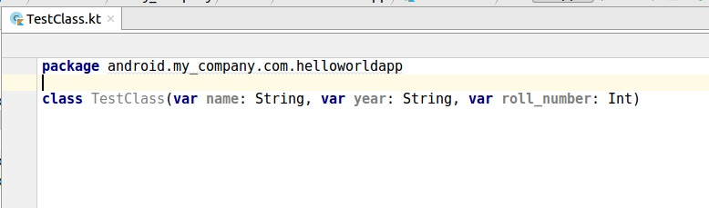

Ананд Шекхар Рой, Раши Каранпурия
Более 100 рецептов, которые показывают, как создавать надежные мобильные и веб-приложения с помощью Kotlin, Spring Boot и Android
Ананд Шекхар Рой независимый разработчик Android. Его карьера мобильного инженера включает в себя работу в различных стартапах и компаниях, таких как ConceptOffice в Нидерландах, и стартапы в США. Он также является наставником для Associate Android Developer Fast Track program от Google на Udacity, и наставником команды из 20 разработчиков программного обеспечения, а также является писателем в AndroidPub. Вероятно, признание-это та часть книги, которая вас меньше всего интересует. Просто потому, что каждый раз, когда вы открываете его, это либо думать кого-то другого, кого вы не знаете. Не в этот раз эта книга посвящена только таким ученикам, как вы, просто потому, что она не ожила бы без вашего желания ее прочитать.
Раши Каранпурия является профессиональным разработчиком Android. Она начала свою карьеру, работая над приложением-кошельком для новозеландского финтех-стартапа. Она разработала проекты в различных областях, таких как IOT, AdTech, бизнес, социальные и потоковые приложения. За эти годы она приобрела глубокое понимание пользовательского опыта, необходимых для разработки успешного мобильного приложения. Она сочетает свои навыки проектирования с масштабируемым и поддерживаемым кодом, используя лучшие практики для создания качественных продуктов.
Я хотел бы поблагодарить каждого и каждого члена сообщества разработчиков по всему миру. Это единственное сообщество, о котором я знаю, чтобы давать идеи и ресурсы так свободно, не ожидая ничего взамен. Знаете ли вы Kotlin с открытым исходным кодом? Это дает характер нашего сообщества разработчиков, почему я, кто я сегодня. Спасибо.
Митчелл Вонг Хо родился в Йоханнесбурге, Южная Африка, где он получил диплом в области электротехники. Карьера разработки программного обеспечения Митчелла началась со встроенных систем, и после этого продолжилась в области настольного компьютера/сервера Майкрософт. Митчелл занимается разработкой приложений на Java с 2000 года J2ME, JEE, desktop и Android, а в последнее время пропагандирует Kotlin для Android.
Данная книга включает в себя примеры реальных проблем, с которыми сталкиваются разработчики, и как Kotlin решает их. Наряду с этим, книга также поможет разработчикам освоить полезные приемы и концепции, которые могут понадобиться при написании кода. Эта книга также поможет разработчикам раскрыть весь потенциал удивительного языка программирования Kotlin. Книга начинается с обзора языка Kotlin и переходит к некоторым прекрасным простым понятиям и функциям, которые он предлагает. Затем она переходит к основам ООП и созданию простых приложений для Android. Далее будут рецепты для более сложных понятий, таких как сети, базы данных, архитектуры, ввода-вывода файлов и тестирования. Книга также будет охватывать некоторые прекрасные возможности Anko, что действительно облегчает некоторые сложные концепции в разработке Android, что делает разработку быстрее и приятнее. В заключении будут несколько разных, но крайне полезных рецептов, которые время от времени могут понадобиться разработчикам.
Эта книга предназначена для начинающих разработчиков Kotlin, которые знают Android и Java, и которые имеют хороший уровень знаний и понимания цикла разработки Android. Читатели знакомы с концепциями разработки Android и понимают потребности тестирования своего кода. Они хотят изучить эффективные методы Kotlin, чтобы сделать существующий процесс разработки Android более эффективным и увлекательным. Это не вводная книга для Kotlin, и она предполагает базовое знакомство с Котлином. Эта книга призвана помочь разработчикам решить проблемы, с которыми они сталкиваются при работе с Kotlin.
Эта книга предполагает знакомство с Java и Android разработкой. Она не является вводной книгой для изучения Kotlin. Читатели должны использовать Android Studio, потому что многие из рецептов будут сосредоточены на разработке под Android.
Вы можете скачать файлы с примерами кода для этой книги со своего аккаунта на www.packtpub.com. Если вы приобрели эту книгу в другом месте, вы можете посетить сайт www.packtpub.com/support и зарегистрируйтесь, чтобы файлы отправлялись вам по электронной почте. Файлы с примерами кода можно загрузить, выполнив следующие действия:
После загрузки файла, пожалуйста, убедитесь, что у Вас установлено следующее программное обеспечение для распаковки скачанного архива с учетом Вашей операционной системы:
Архив с файлами примеров кода для этой книги также размещеы на Github по адресу https://gitlab.com/users/aanandshekharroy/projects.
Другие архивы с файлами примеров кода для нашего богатого каталога книг и видео доступны на https://github.com/PacktPublishing/.
Проверьте их!
В этой книге используется ряд текстовых соглашений.
CodeInText
: Указывает кодовые слова в тексте, имена таблиц базы данных, имена папок и файлов, расширения файлов, пути,
фиктивные
URL-адреса, пользовательский ввод, и в Twitter. Вот пример: "соответствующее свойство
SourceSets
должно быть обновлено, если не используется соглашение по умолчанию."
Блок кода оформляется следующим образом:
sourceSets {
main.kotlin.srcDirs += 'src/main/myKotlin'
main.java.srcDirs += 'src/main/myJava'
}
Когда мы хотим обратить ваше внимание на определенную часть блока кода, соответствующие строки или элементы выделены полужирным шрифтом:
sourceSets {
main.java.srcDirs += 'src/main/kotlin/'
}
Любой ввод или вывод из командной строки записывается следующим образом:
$ kotlinc hello.kt -include-runtime -d hello.jar. $ java -jar hello.jar
Bold : обозначает новое понятие, важное слово, или слова, которые вы видите на экране. Например, в тексте выделяются пункты в меню или диалоговых окнах. Вот пример: "В окне Выбор целевого объекта развертывания, выберите устройство и нажмите кнопку ОК."
Предупреждения или важные примечания отображаются следующим образом.
Советы и рекомендации выглядят следующим образом
В этой книге вы найдете несколько заголовков, которые появляются часто (Подготовка, Как это сделать... Как это работает... Это еще не все..., and См. также...).
В них даются четкие инструкции о том, как использовать рецепт, используйте эти разделы следующим образом:
В этом разделе рассказывается, назначение рецепта, описывается как установить необходимое программное обеспечение или выполнить необходимые предварительные настройки.
Этот раздел содержит шаги, необходимые для выполнения рецепта.
Этот раздел обычно состоит из подробного объяснения того, что произошло в предыдущем разделе.
Этот раздел состоит из дополнительной полезной информации.
В этом разделе содержатся полезные ссылки на другую полезную информацию
Android-приложения это увлекательная технология. Приложения, разработанные на Android имеют всемирную аудиторию. Однако она является серьезным вызовом для разработчиков. Проблема заключается в обновлении API, платформы и поддержке разнообразных возможностей устройств. Например, если вы Android разработчик, вы должны полагаться на Java 6, Если вы хотите поддерживать все Уровни API в Android. Java 6 устарела сейчас настолько, что даже его преемник, Java 7, сегодня уже устарела. Есть насущная потребность в современном языке для Android, на котором построена триллионная индустрия. Правда, теперь у нас есть Java 8, но мы можем использовать его, только если мы разрабатываем Android-приложения для API 24-го уровня и выше. Однако это возможно только на 9% Android-устройств по состоянию на 2017 год.
Однако не все потеряно, и благодаря JVM мы можем писать Android-приложения используя любой язык, который производит совместимый байт-код JVM при компиляции. Поэтому теоретически мы можем использовать Clojure, Groovy, Scala и Kotlin. Kotlin, это лучшая альтернатива среди всех, почему? Это потому, что в апреле 2017 года Google объявил Kotlin в качестве официального языка для Android разработки.
Некоторые из крупнейших технологических компаний, таких как Pinterest, Uber, Atlassian, Coursera и Evernote теперь используют Kotlin в своих Android-приложениях. Это уже говорит об огромном объеме для Kotlin. 100% совместимость с Android и Java, помогла Kotlin в его принятии. С Kotlin намного проще работать, чем с Java, и кроме Android-приложений Вы также можете создавать веб-приложения на нем. Итак, эта глава познакомит Вас с Kotlin и поможет вам начать работу с этой удивительной технологией.
В этой главе мы сначала рассмотрим, как настроить среду для начала работы с Котлином.
Начать работу с Kotlin очень легко, особенно после того, как Google добавил официальную поддержку языка. Вы можете использовать Kotlin напрямую в Android Studio 3. Android Studio 3 все еще находится в бета-версии на момент написания этой книги. Лучшее в использовании Kotlin для Android является то, что он совместим с существующим кодом, будь то Java или C++. Работая с Kotlin вы поймете, что код в Kotlin является кратким, расширяемым и мощным. Это действительно делает разработку Android более увлекательной и легкой. Давайте посмотрим, как мы можем начать работать в Kotlin, создав проект Kotlin на Android Studio 3.
Чтобы начать работу, Вам понадобится Android Studio, установленная на ваш компьютер. В Android Studio встроена Android SDK и эмулятор витруального устройства. Убедитесь, что в Вашей системе установлен Java Development Kit. Вам понадобится Android-телефон или эмулятор для отладки проекта. Вам также понадобится по крайней мере одно виртуальное Android-устройство, если у Вас нет Android-телефона.
Итак, вот перечень необходимого программного обеспечения, которое должно быть установлено, прежде чем перейти к следующему разделу:
Создать проект в Android Studio очень просто, а создание его с поддержкой Kotlin требует один дополнительный щелчок. Вот пошаговый процесс выполнения:
Теперь в Android Studio нажмите правой кнопкой мыши на модуль приложения в окне проекта, а затем выберите Run (или нажмите кнопку Run на панели инструментов).
В окне Выбор цели развертывания выберите устройство и нажмите кнопку ОК. Через некоторое время вы увидите запущенное приложение на вашем мобильном телефоне или эмуляторе.
После нажатия на кнопку Finish в окне мастера создания нового проекта, Android Studio создаст ваш проект и выполнит все необходимые настройки. Если вы добавили деятельность, как упоминалось в шаге 4, Вы увидите окно с шаблонным кодом Activity. Это выглядит примерно так:
Gradle сейчас является де-факто инструментом сборки для Android. Она отлично подходит для автоматизации задач, без ущерба для удобства сопровождения, практичности, гибкости, расширяемости, или производительности. В этом рецепте, мы увидим, как использовать Gradle для запуска кода Kotlin.
Мы будем использовать IntelliJ IDEA, потому что она предоставляет полное взаимодействие Gradle с Kotlin, и это действительно отличная IDE для работы. Вы также можете использовать для этого Android Studio.
В следующих шагах мы создадим проект Kotlin с системой сборки Gradle. Во-первых, мы выберем опцию Создать новый проект из меню. Затем выполним следующие действия:
build.gradle файл, который будет выглядеть
примерно так:
version '1.0-SNAPSHOT'
buildscript {
ext.kotlin_version = '1.1.4-3'
repositories {
mavenCentral()
}
dependencies {
classpath "org.jetbrains.kotlin:kotlin-gradle-
plugin:$kotlin_version"
}
}
apply plugin: 'java'
apply plugin: 'kotlin'
sourceCompatibility = 1.8
repositories {
mavenCentral()
}
dependencies {
compile "org.jetbrains.kotlin:kotlin-stdlib-jre8:$kotlin_version"
testCompile group: 'junit', name: 'junit', version: '4.12'
}
compileKotlin {
kotlinOptions.jvmTarget = "1.8"
}
compileTestKotlin {
kotlinOptions.jvmTarget = "1.8"
}
gradle
run. Однако перед этим нам необходимо подключить плагин, который позволит нам напрямую
запустить этот код. Для этого нам нужно добавить две строки в файл build.gradle:
apply plugin: 'application' mainClassName = "HelloWorldKt"
gradle run в терминале, чтобы выполнить это файл, и вы
увидите выходные данные метода, как показано:
Структура проекта по умолчанию при создании нового проекта в IntelliJ, как показано:
project
- src
- main (root)
- kotlin
- java
Если вы хотите иметь другую структуру проекта, вы должны объявить её в build.gradle. Вы
можете
сделать это, добавив следующие строки в build.gradle.
Соответствующее свойство sourceSets должно быть обновлено, если не используется
соглашение
по
умолчанию:
sourceSets {
main.kotlin.srcDirs += 'src/main/myKotlin'
main.java.srcDirs += 'src/main/myJava'
}
Хотя вы можете хранить файлы Kotlin и Java в одном пакете, хорошая практика, это держать их порознь.
Узнайте о том, Как создать исполняемый jar-файл с Gradle и Kotlin, ищите рецепт в этой главе.
Для любого языка, первым шагом будет изучение работы с компилятором из командной строки, эти знания могут пригодиться. В этом рецепте мы будем запускать Kotlin-программу с помощью командной строки, также мы немного рассмотрим интерактивную оболочку Kotlin.
Чтобы иметь возможность выполнить этот рецепт, вам потребуется установить на ваш компьютер компилятор
Kotlin. Каждый релиз Kotlin поставляется с автономным компилятором. Вы можете найти последнюю версию
по ссылке: https://github.com/JetBrains/kotlin/releases
Чтобы вручную установить компилятор, распакуйте загруженный архив в каталог, и при необходимости добавьте полный путь к папке bin в переменную окружения PATH. Каталог bin содержит скрипты, необходимые для компиляции и запуска Kotlin на Windows, OS X и Linux.
Теперь мы готовы запустить нашу первую программу с помощью командной строки. Сначала, мы создадим простое приложение, которое отображает Hello World! и скомпилируем его:
fun main(args: Array<String>) {
println("Hello, World!")
}
$ kotlinc hello.kt -include-runtime -d hello.jarapply
$ java -jar hello.jar
.jar
без -include-runtime, таким образом, новая команда будет выглядеть так:
$ kotlinc hello.kt -d hello.jar
Надеюсь, вы заметили информацию, которую я всегда игнорирую, команда выхода из интерактивной
оболочки: quit, и для вызова справки: help.
Вы можете запустить любой допустимый код Kotlin в интерактивной оболочке. Например, попробуйте некоторые из следующих команд:
3*2+(55/5)println("yo")println("check this out ${3+4}")Вот скриншот выполнения предыдущего кода:
Опция -include-runtime создает автономный исполняемый .jar-файл, путем
включения в него библиотеки времени выполнения Kotlin. Затем мы используем Java чтобы запустить
созданный .jar-файл.
Опция -d указывает, какие выходные данные компилятора должны вызываться, и может быть
именем каталога для файлов класса, или имя .jar-файла.
Kotlin также можно использовать для написания сценариев оболочки. Сценарий оболочки содержит исполняемый код верхнего уровня.
Файлы скриптов Kotlin имеют расширение .kts в отличие от обычного .kt.
Чтобы запустить файл сценария, просто передайте компилятору параметр -script:
$ kotlinc -script kotlin_script_file_example.kts
Kotlin отлично подходит для создания небольших утилит командной строки, которые могут быть упакованы и распространены как обычные файлы JAR. В этом рецепте мы увидим, как это сделать с помощью системы сборки Gradle. Система сборки Gradle является одной из самых сложных систем сборки. Это инструмент сборки по умолчанию для Android и предназначен для облегчения написания сложных сценариев, многоязычных сборок с большим количеством зависимостей (типичных для больших проектов). Она автоматизирует ваш проект без ущерба для удобства сопровождения, удобства использования, гибкости, расширяемости и производительности. Мы будем использовать систему сборки Gradle для создания самораспаковывающегося JAR-файла. Этот файл JAR может быть распространен и запущен на любой платформе, поддерживающей Java.
Вам потребуется IDE (предпочтительно IntelliJ или Android Studio), вы должны указать ей, где
находятся Ваши файлы Kotlin. Это можно сделать, в build.gradle-файле, добавив
следующее:
sourceSets {
main.java.srcDirs += 'src/main/kotlin/'
}
Предыдущие строки необходимы, если файлы Kotlin отделены от пакетов Java. Это необязательно, и Вы можете продолжать работать с файлами Kotlin в пакетах Java, но рекомендуется разделять их.
Мы напишем очень простую функцию, которая просто напечатает Hello World! при исполнении.
Поскольку это будет простая функция, я просто добавляю ее как функцию main() верхнего
уровня.
Давайте рассмотрим шаги, с помощью которых мы можем создать исполняемый файл JAR:
HelloWorld.kt который имеет main функцию,
выводящую "Hello world!”:
fun main(args:Array<String>){
println("Hello world")
}
jar, через которую проходит Gradle, чтобы
сообщить ей о нашей записи в наш проект. В проекте Java это будет путь к классу, в котором
находится наша функция main(), поэтому вам нужно будет добавить эту задачу jar
в build.gradle:
jar {
manifest {
attributes 'Main-Class': 'HelloWorldKt'
}
from { configurations.compile.collect { it.isDirectory() ? it : zipTree(it) } }
}
build.gradle, необходимо выполнить
следующую команду gradle для создания файла jar:
./gradlew clean jar
build/libs. Теперь вы можете просто
запустить java -jar demo.jar для запуска файла JAR.
После этого можно просмотреть вывод в консоли:
Чтобы сделать исполняемые JAR-файлы, нам нужен файл манифеста с именем MANIFEST.MF в
каталоге META-INF. Для этого нам просто нужно указать имя класса Java,
который содержит метод main().
Можно утверждать, что, хотя у нас нет объявления класса верхнего уровня, мы указываем его как HelloWorldKt
в коде для задачи jar:
manifest {
attributes 'Main-Class': 'HelloWorldKt'
}
Причина помещения предыдущего блока кода в задачу jar состоит в том, что компилятор Kotlin добавляет
все функции верхнего уровня в соответствующие классы для обеспечения обратной совместимости с JVM.
Таким образом, имя класса, сгенерированного компилятором Kotlin, будет состоять из имени файла и
суффикса Kt, HelloWorldKt.
Причина, по которой мы добавили { configurations.compile.collect { it.isDirectory() ? it :
zipTree(it) } } в задачу jar в том, что мы хотим, чтобы Gradle скопировал все зависимости
JAR. По умолчанию, Gradle (так же как и Maven) упаковывает файлы класса Java в файл JAR,
подразумевается, что на этот файл JAR будет ссылаться приложение, где все его зависимости также
доступны в classpath загружаемого приложения. Таким образом, указывая эти строки в задаче jar, мы
сообщаем gradle, что нужно взять все связанные зависимости этого JAR, и скопировать их как часть
самого JAR. В сообществе Java это называется fat JAR. В fat JAR все зависимости
попадают в classpath загружаемого приложения, поэтому код будет выполнен без проблем. Единственным
недостатком создания fat JARs является большой размер файла (что объясняет название), хотя в
большинстве ситуаций это не является большой проблемой.
Во многих приложениях взаимодействие с пользователем является очень важной частью, и самый простой способ это сделать - прочитать вводимые пользователем данные и выдать на их основе вывод. В этом рецепте мы разберемся в различных способах считывания ввода, а также предоставим вывод в консоли.
Необходимо установить предпочтительную среду разработки, которая компилирует и запускает Kotlin. Можно также использовать командную строку для компиляции и запуска кода Kotlin, для которого необходимо установить компилятор Kotlin вместе с JDK.
Давайте пройдем следующие шаги, с помощью которых мы можем прочитать консольный ввод в Kotlin:
println("Just a line")
println("Input your first name")
var first_name = readLine()
println("Your first name: $first_name")
println("Hi $first_name, let us have a quick math test. Enter two numbers separated by space.")
val (a, b) = readLine()!!.split(' ').map(String::toInt)
println("$a + $b = ${a+b}")
fun main(args: Array<String>) {
println("Input your first name")
var first_name = readLine()
println("Input your last name")
var last_name = readLine()
println("Hi $first_name $last_name, let us have a quick math test. Enter two numbers separated by space.")
val (a, b) = readLine()!!.split(' ').map(String::toInt)
println("what is $a + $b ?")
println("Your answer is ${if (readLine()!!.toInt() == (a+b)) "correct" else "incorrect"}")
println("Correct answer = ${a+b}")
println("what is $a * $b ?")
println("Your answer is ${if (readLine()!!.toInt() == (a*b)) "correct" else "incorrect"}")
println("Correct answer = ${a*b}")
println("Thanks for participating :)")
}
Вот скриншот компиляции и запуска предыдущего кода:
Давайте попробуем разобраться в методах, с помощью которых нам удалось прочитать ввод из консоли.
За кулисами, Kotlin.io использует java.io для ввода-вывода. Так println
использует System.out.println. Использование в Kotlin шаблонов строк и встроенных
функций делает написание кода чрезвычайно простым и кратким..
Это часть кода из Kotlin stdlib используется для консольного ввода/вывода:
/** Prints the given message and newline to the standard output stream. */
@kotlin.internal.InlineOnly
public inline fun println(message: Any?) {
System.out.println(message)
}
Лучшей частью Kotlin является его совместимость с Java. Кроме того, с IDE на основе IntelliJ, мы можем напрямую конвертировать наш код Java в Kotlin. В этом рецепте мы рассмотрим, как это сделать.
Для этого рецепта необходима установленная IDE на основе IntelliJ, компилирующая и запускающая Kotlin и Java.
Давайте посмотрим, как преобразовать Kotlin-файл в Java-файл:
.java. Теперь, в главном меню, нажмите
на пункт меню Code и выберите опцию Convert Java File to Kotlin
File. Ваш Java-файл будет преобразован в Kotlin, и расширение файла изменится на
.kt.
Ниже приведен пример файла Java:
После преобразования в Kotlin увидим:
.java, содержащий
декомпилированный байт-код Java из кода Kotlin:Да, в нем много ненужного кода, которого не было в исходном Java-коде, но так обстоит дело с
декомпилированным байт-кодом. На данный момент это единственный способ преобразовать код Kotlin в
Java. Скопируйте содержимое декомпилированного файла в .java-файл и удалите ненужный
код.
Kotlin - это статически типизированный язык программирования, который работает на виртуальной машине Java и компилируется в совместимый с JVM байт-код. Поэтому мы можем конвертировать Java-код в Kotlin, и смешивать Java и Kotlin код вместе. Также Вы можете при необходимости получить Java-код из Kotlin, хотя это не желательно.
В Kotlin есть несколько отличных мощных функций, которые мы должны использовать для улучшения нашего кода. Они включают в себя переосмысление наших лучших старых практик кодирования. Многие из наших старых методов кодирования могут быть заменены лучшими альтернативами от Kotlin. Одним из них является то, как мы пишем наш логгер. Хотя есть много библиотек, которые обеспечивают функциональность ведения журнала логгирования, мы постараемся создать наш собственный логгер в этом рецепте, используя идиоматический Kotlin.
Мы будем использовать IntelliJ IDEA для написания и выполнения нашего кода.
Давайте пройдемся по шагам создания идиоматического логгера в Kotlin:
private static final Logger logger = LoggerFactory.getLogger(CurrentClass.class);
…
logger.info(“Hi, {}”, name);
val logger = LoggerFactory.getLogger(CurrentClass::class)
…
logger.info(“Hi, {}”, name)
Однако, помимо этого, мы можем использовать мощь Kotlin, используя Делегаты для
журналирования. Мы создадим средство ведения журнала с помощью ключевого слова lazy.
Таким образом, мы создадим объект только тогда, когда в нем возникнет необходимость. Делегаты, это
отличный способ отложить создание объекта до его использования. Это уменьшает время запуска (что
очень важно и ценится в Android). Итак, давайте рассмотрим метод, использующий ленивые делегаты в
Котлине:
java.util.Logging, но это работает для любой
библиотеки ведения журнала. Итак, давайте используем ленивый делегат Котлина, чтобы получить наш
логгер:
public fun <R : Any> R.logger(): Lazy<Logger> {
return lazy { Logger.getLogger(this.javaClass.name) }
}
class SomeClass {
companion object { val log by logger() }
fun do_something() {
log.info("Did Something")
}
}
При выполнении кода можно увидеть следующие выходные данные:
Sep 25, 2017 10:49:00 PM packageA.SomeClass do_something INFO: Did Something
Как мы видим в выходных данных, мы получаем имя класса и имя метода (если вы обращаетесь к логгеру внутри метода).
Обратите внимание, мы поместили наш logger в companion object. Причина
этого довольно проста, мы хотим иметь только один экземпляр logger на класс.
Кроме того, logger() возвращает объект-делегат, что означает, что объект будет создан
при первом доступе и вернет тот же объект при последующих обращениях.
Anko - это библиотека Android, которая использует Kotlin и упрощает разработку для Android с помощью функций-расширений. Она предоставляет Anko-logger, который вы можете использовать, если не хотите писать свой собственный логгер. Он включен в anko-commons, в котором также есть много интересных вещей, которые стоит включить в ваши Android-проекты, использующие Kotlin.
В Anko стандартная реализация logger будет выглядеть примерно так:
class SomeActivity : Activity(), AnkoLogger {
private fun someMethod() {
info("London is the capital of Great Britain")
debug(5) // Метод .toString() будет вызван автоматически
warn(null) // Будет выведено "null"
}
}
Как вы можете видеть, Вам просто нужно реализовать(имплементировать) AnkoLogger.
Каждый метод имеет две версии: plain and lazy (inlined):
info("String " + "concatenation")
info { "String " + "concatenation" }
Лямбда будет вычисляться только если результат Log.isLoggable(tag, Log.INFO) истинен.
Дополнительные сведения о делегированных свойствах см. в рецепте "Работа с делегированными свойствами", главы 3 "Классы и объекты".
Kotlin был разработан с учетом совместимости. Существующий код в Java может быть вызван из кода Kotlin, но поскольку Java в отличии от Kotlin имеет другие ключевые слова, мы иногда сталкиваемся с проблемами при вызове метода Java с именем, совпадающим с ключевым словом Kotlin. В Kotlin есть обходной путь, который позволяет вызывать метод с именем, представляющим ключевое слово Kotlin.
Убедитесь, что у вас есть доступ к IDE, или редактору кода, в котором можно писать и запускать код.
Создайте класс Java с именем метода, совпадающим с любым ключевым словом Kotlin. Я использую
is в качестве имени метода, мой класс Java выглядит следующим образом:
public class ASimpleJavaClass {
static void is(){
System.out.print("Nothing fancy here");
}
}
Теперь попробуйте вызвать этот метод из кода Kotlin. Если вы используете какой-либо редактор кода с функцией автозаполнения, он автоматически заключит имя метода в обратные апострофы ( ` ` ):
fun main(args: Array<String>) {
ASimpleJavaClass.`is`()
}
Аналогичным образом обрабатываются и другие ключевые слова в Kotlin, которые являются корректными идентификаторами в Java.
Согласно документации Kotlin, некоторые ключевые слова Kotlin являются допустимыми идентификаторами в
Java: in, object, is и так далее. Если библиотека Java использует ключевое слово Kotlin
для имени метода, этот метод можно вызвать экранируя его обратным апострофом `.
Ниже приведены ключевые слова в Kotlin:
| package | as | typealias | class | this | super | val |
| var | fun | for | null | true | false | is |
| in | throw | return | break | continue | object | if |
| try | else | while | do | when | interface | typeof |
Импорт библиотеки или класса в коде, это повседневная работа программиста. В настоящее время довольно легко импортировать в код файлы на любом языке, благодаря отличным редакторам кода.
Однако что произойдет, если попытаться импортировать два класса в файл? Хотя вы всегда должны стараться давать разные имена для разных классов, иногда это неизбежно. Например, в случае различных библиотек, имеющих одинаковое имя для своих классов. В Java, существует обходной путь, вы должны использовать полный квалификатор, который выглядит примерно так:
class X {
com.very.very.long.prefix.bar.Foo a;
org.other.very.very.long.prefix.baz.Foo b;
...
}
Грязно, не правда ли? Теперь давайте посмотрим, как элегантно Kotlin обращается к нему.
Убедитесь, что у вас есть IDE или редактор кода, в котором можно писать и запускать код. Для тестирования можно создать два класса с одинаковыми именами, но в разных пакетах. См. пример здесь:
В следующих шагах и примерах мы увидим, как можно устранить неоднозначность классов с одинаковыми именами, используя ключевое слово Kotlin.
as, чтобы
локально переименовать конфликтующую сущность. В Котлине это будет выглядеть так, как показано:
import foo.Bar // Bar is accessible import bar.Bar as bBar // bBar stands for 'bar.Bar'
Bar.methodOfFooBar() bBar.methodOfBarBar()
Например, рассмотрим использование ключевого слова as для устранения неоднозначности
двух классов с одинаковыми именами ( SomeClass.kt ), но в различных пакетах:
SameClass.kt (packageA)
package packageA
class SameClass {
companion object {
fun methodA(){
println("Method a")
}
}
}
SameClass.kt (packageB)
package packageB
class SameClass {
companion object {
fun methodB(){
println("Method b")
}
}
}
HelloWorld.kt класс, использующий классы с похожими именами:
import packageA.SameClass as anotherSameClass
import packageB.SameClass
fun main(args: Array<String>) {
anotherSameClass.methodA()
SameClass.methodB()
}
Kotlin предоставляет несколько функций (в инфиксной форме) для выполнения побитовых операций и битового сдвига. В этом разделе мы научимся выполнять операции с битами в Kotlin на примерах.
Побитовые операции и операции битового сдвига, используются только на двух целочисленных типах: Int и Long.
Вот полный список побитовых операций (доступен только для Int и Long):
shl(bits) – сдвиг влево с учётом знака (<< в Java)shr(bits) – сдвиг вправо с учётом знака (>> в Java)ushr(bits) – сдвиг вправо без учёта знака (>>> в Java)and(bits) – побитовое Иor(bits) – побитовое ИЛИxor(bits) – побитовое исключающее ИЛИinv() – побитовое отрицаниеДавайте рассмотрим несколько примеров, чтобы понять побитовые операции.
Функция or сравнивает соответствующие биты двух значений. Если один из двух бит равен 1,
он дает 1, а если нет то 0.
Рассмотрим пример:
fun main(args: Array<String>) {
val a=2
val b=3
print(a or b)
}
Следующий вывод:
3
Вот объяснение предыдущего примера:
2 = 10 (Двоичный формат)
3 = 11 (Двоичный формат)
Побитовое OR 2 и 3,
в двоичном формате 10 OR 11
11 = 3 (Десятичный формат)
Функция and сравнивает соответствующие биты двух значений. Если один из двух бит равен
0,
дает 0, если оба бита равны 1, дает 1.
Рассмотрим пример:
fun main(args: Array<String>) {
val a=2
val b=3
print(a and b)
}
Следующий вывод:
2
Давайте посмотрим на объяснение:
2 = 10 (Двоичный формат)
3 = 11 (Двоичный формат)
Побитовое AND 2 и 3,
в двоичном формате 10 AND 11
10 = 2 (Десятичный формат)
Функция xor сравнивает соответствующие биты двух значений. Если соответствующие биты
одинаковы, это дает 0, и если они отличаются, дает 1.
Посмотрите на этот пример:
fun main(args: Array<String>) {
val a=2
val b=3
print(a xor b)
}
Следующий вывод:
1
Вот объяснение:
2 = 10 (Двоичный формат)
3 = 11 (Двоичный формат)
Побитовое XOR 2 и 3,
в двоичном формате 10 XOR 11
01 = 1 (Десятичный формат)
Функция inv просто инвертирует биты. Если бит равен 1, то он становится равен 0 и
наоборот.
Вот пример:
fun main(args: Array<String>) {
val a=2
print(a.inv())
}
Следующий вывод:
-3
Вот объяснение:
2 = 0000 0010 (Двоичный формат)
-3 = 1111 1101 (Биты инвертированы)
Инверсия битов целого числа n равно -(n + 1).
Функция shl сдвигает биты влево на указанное количество бит.
Вот пример:
fun main(args: Array<String>) {
println( 5 shl 0)
println( 5 shl 1)
println( 5 shl 2)
}
Следующий вывод:
5 10 20
Вот объяснение:
5 = 101 (Двоичный формат)
101 сдвиг влево на 0 бит = 101 (5 в десятичном формате, сдвига нет)
101 сдвиг влево на 1 бит = 1010 (10 в десятичном формате)
101 сдвиг влево на 2 бит = 10100 (20 в десятичном формате)
Функция shr сдвигает биты вправо на указанное количество бит.
Вот пример:
fun main(args: Array<String>) {
println( 5 shr 0)
println( 5 shr 1)
println( 5 shr 2)
}
Следующий вывод:
5 2 1
Вот объяснение:
5 = 101 (Двоичный формат)
101 сдвиг вправо на 0 бит = 101 (5 в десятичном формате, сдвига нет)
101 сдвиг вправо на 1 бит = 010 (2 в десятичном формате)
101 сдвиг вправо на 2 бит = 001 (1 в десятичном формате)
Функция ushr сдвигает биты вправо на указанное количество бит, заполняя крайние левые
биты нулями.
Вот пример:
fun main(args: Array<String>) {
println( 5 ushr 0)
println( 5 ushr 1)
println( 5 ushr 2)
}
Следующий вывод:
5 2 1
Вот объяснение:
5 = 101 (Двоичный формат)
101 сдвиг вправо на 0 бит = 101 (5 в десятичном формате, сдвига нет)
101 сдвиг вправо на 1 бит = 010 (2 в десятичном формате)
101 сдвиг вправо на 2 бит = 001 (1 в десятичном формате)
Побитовые операторы в Kotlin не являются встроенными операторами, как в Java, но их все еще можно
использовать в качестве оператора. Почему? Посмотрите на реализацию shr:
public infix fun shr(bitCount: Int): Int
Вы видите, что метод имеет инфиксную нотацию, которая позволяет ему вызываться как инфиксное выражение.
Kotlin упрощает преобразование строк, в другие типы данных, такие как Long, Integer или Double.
В JAVA, используются статические методы Long.parseLong() , или
Long.valueOf(), которые анализируют строковый аргумент, и возвращают его как десятичное
число со знаком, также можно преобразовать друге типы данных, такие как Int, Double и Boolean.
Давайте посмотрим, как это делается в Kotlin.
Вам нужен IDE или редактор, для написания и запуска кода Kotlin. В качестве примера мы будем использовать преобразование строки к типу Long. Преобразование к другим типам данных выполняется аналогично.
Чтобы преобразовать строку к типу Long, мы используем метод .toLong() строки. Он
анализирует строку и возвращает число Long. Если строка не является допустимым представлением числа
метод вызовет исключение NumberFormatException.
Вот пример, который показывает преобразование строки в Long:
fun main(args: Array<String>) {
val str="123"
print(str.toLong())
}
При выполнении предыдущего кода Вы увидите следующие выходные данные:
123
Если вы не хотите иметь дело с исключениями, вы можете использовать .toLongOrNull().
Этот метод анализирует строку как Long и возвращает результат, или null, если строка не является
допустимым представлением числа.
В этом примере мы увидим, как мы можем преобразовать строку с помощью метода
.toLongOrNull().
fun main(args: Array<String>) {
val str="123.4"
val str2="123"
println(str.toLongOrNull())
println(str2.toLongOrNull())
}
При запуске предыдущей программы генерируется следующий вывод:
null 123
В предыдущих примерах используется основание (radix) 10. Бывают случаи, когда мы хотим преобразовать
строку в Long, но используя другое основание. В оба метода string.toLong() и string.toLongOrNull(),
можно передать основание, которое будет использоваться при преобразовании. Давайте посмотрим как это
делается:
string.toLong(radix):
[Long] число и возвращает результатNumberFormatException, если строка не является
допустимым представлением числа
IllegalArgumentException, когда [radix] не
является допустимым основанием для преобразования строки в число
string.toLongOrNull(radix):
[Long] число и возвращает результат или null, если
строка не является допустимым представлением числа
IllegalArgumentException, когда [radix] не
является допустимым основанием для преобразования строки в число
В предыдущих примерах мы разбирали строки с основанием 10, то есть десятичные. По умолчанию используется основание равное 10, но есть определенные ситуации, когда нам нужно другое основание. Например, в случае разбора строки в виде двоичного или восьмеричного числа. Итак, теперь мы увидим, как работать с основанием, отличным от 10. Хотя вы можете использовать любое допустимое основание, мы покажем наиболее часто используемые примеры, такие как двоичное и восьмеричное.
fun main(args: Array<String>) {
val str="11111111"
print(str.toLongOrNull(2))
}
При запуске предыдущей программы генерируется следующий вывод:
255
fun main(args: Array<String>) {
val str="377"
print(str.toLongOrNull(8))
}
При запуске предыдущей программы генерируется следующий вывод:
255
.toLong(),
.toLongOrNull()):
fun main(args: Array<String>) {
val str="255"
print(str.toLongOrNull(10))
}
При запуске предыдущей программы генерируется следующий вывод:
255
Для преобразования Kotlin использует функции-расширения String, такие как .toLong() и
.toLongOrNull(). Давайте посмотрим на их реализацию.
Long используйте:
public inline fun String.toLong(): Long = java.lang.Long.parseLong(this)
Как вы видите, внутри, он также вызывает статический метод Java
Long.parseLong(string), аналогично и с другим типами данных.
Short используйте:
public inline fun String.toShort(): Short = java.lang.Short.parseShort(this)
Int используйте:
public inline fun String.toInt(): Int = java.lang.Integer.parseInt(this)
public inline fun String.toLong(radix: Int): Long = java.lang.Long.parseLong(this, checkRadix(radix))
Метод checkRadix проверяет, является ли переданное основание
[radix], допустимым основанием для преобразования строки в число и число в
строку.
Давайте быстро рассмотрим несколько других функций-расширений, предоставляемых Kotlin для преобразования строк:
toBoolean(): Возвращает true , если содержимое этой строки равно слову
true, игнорируя регистр, и false в противном случае.
toShort(): Преобразует строку в [Short] число и возвращает его.NumberFormatException
toShort(radix): Преобразует строку в [Short] число и возвращает
его.NumberFormatException.[radix], не является допустимым основанием для преобразования
строки в число, то вызывает исключение IllegalArgumentExceptiontoInt(): Преобразует строку в [Int] число и возвращает его.NumberFormatException
toIntOrNull(): Преобразует строку в [Int] число и возвращает его, или
null если строка не является допустимым представлением числа
toIntOrNull(radix): Преобразует строку в [Int] число и возвращает его,
или
null если строка не является допустимым представлением числа.[radix], не является допустимым основанием для преобразования строки
в число, то вызывает исключение IllegalArgumentException
toFloat(): Преобразует строку в [Float] число и возвращает его.NumberFormatException
toDouble(): Преобразует строку в [Double] число и возвращает его.NumberFormatException
Котлин включает в себя продвинутые возможности работы со строками. Одна из действительно интересных функций, это строковые шаблоны. Строковые шаблоны позволяют строкам содержать шаблонные выражения.
В Java нужно было использовать StrSubstitutor
(https://commons.apache.org/proper/commons-lang/apidocs/org/apache/commons/lang3/text/StrSubstitutor.html)
и Map, чтобы получить строковые шаблоны. В Java это выглядит следующим образом:
Map<String, String> valuesMap = new HashMap<String, String>();
valuesMap.put("city", "Paris");
valuesMap.put("monument", "Eiffel Tower");
String templateString = "Enjoyed ${monument} in ${city}.";
StrSubstitutor sub = new StrSubstitutor(valuesMap);
String resolvedString =sub.replace(templateString);
Kotlin облегчает боль при написании строковых шаблонов и делает его приятным, кратким и намного менее подробным.
С помощью строковых шаблонов можно внедрить переменную или выражение в строку без объединения строк. Итак, давайте начнем!
В следующих шагах мы узнаем, как использовать строковые шаблоны:
$variableName
Альтернативный вариант:
${expression}
fun main(args: Array<String>) {
val foo = 5;
val myString = "foo = $foo"
println(myString)
}
Указанный выше код выведет foo = 5
fun main(arr: Array<String>){
val lang = "Kotlin"
val str = "The word Kotlin has ${lang.length} characters."
println(str)
}
\n. Такие строки заключаются в тройные кавычки ( """
):
fun main(args: Array<String>) {
val a = 5
val b = 6
val myString = """
${if (a > b) a else b}
"""
println("Bigger number is: ${myString.trimMargin()}")
}
Когда вы запустите программу, она выведет: Bigger number is: 6
Использование строкового шаблона с именем переменной довольно просто. Раньше мы объединяли строки, но теперь мы можем просто указать переменную с символом $ перед ней.
Когда строковой шаблон используется в качестве выражения, выражение внутри ${..}
вычисляется первым и значение объединяется со строкой. В предыдущем примере (шаблон строки с
необработанной строкой) вычисляется выражение ${if (a > b) a else b} и его значение, то
есть 6, печатается вместе со строкой.
Строковые шаблоны также работают со свойствами и функциями строки. Вот пример:
fun main(args: Array<String>) {
val str1="abcdefghijklmnopqrs"
val str2="tuvwxyz"
println("str1 equals str2 ? = ${str1.equals(str2)}")
println("subsequence is ${str1.subSequence(1,4)}")
println("2nd character is ${str1.get(1)}")
}
Выведет:
str1 equals str2 ? = false subsequence is bcd 2nd character is b
Потоки управления являются основным строительным блоком любого языка программирования. Kotlin отличается
от всех остальных тем, что вы можете использовать неокоторые из них в качестве выражения, например
try - catch, if - else, when и так далее. В этой главе мы
рассмотрим некоторые из потоков управления, предлагаемых Kotlin, и научимся пользоваться ими. Кроме
того, мы увидим что они более функциональны чем потоки управления Java. Итак, давайте приступим к
работе!
В Kotlin if особенный, поскольку возвращает значение. Мы можем использовать оператор
if для присвоения значений. Это устраняет необходимость в тернарном операторе.
Давайте посмотрим, как можно использовать оператор if для присвоения значения.
Необходимо установить среду разработки, которая компилирует и запускает Kotlin. Для этой цели можно также использовать командную строку, для этого необходимо установить компилятор Kotlin вместе с JDK. Я использую командную строку для компиляции и запуска моего кода Kotlin для этого рецепта.
Создайте файл и назовите его, ifWithKotlin.kt. Вы можете назвать ее как угодно, имя
файла не обязательно должно совпадать с именем класса, как это требует Java. Теперь, чтобы
начать
работу, необходимо объявить main метод, потому что виртуальная машина Java всегда начинает
выполнение, вызывая метод main.
Объявление main метода выглядит так:
fun main(args: Array<String>) { }
if традиционным способом, чтобы понять, как
он работает:
fun main(args: Array<String>) {
var x:Int
if(10>20){
x = 5
}else{
x = 10
}
println("$x")
}
В этом блоке кода мы присваиваем значение x в блоке if и else,
а затем печатаем его.
fun main(args: Array<String>) {
var x:Int = if(10>20) 5 else 10
println("$x")
}
В этом блоке кода мы присвоили x значение, возвращаемое блоком if -
else. Обратите внимание, что мы использовали оператор if как выражение.
if:
fun main(args: Array<String>) {
var x:Int
x = if(10>20) {
doSomething()
25
} else if (12<13) {
26
} else {
27
}
println("$x")
}
fun doSomething() {
var a = 6
println("$a")
}
Обратите внимание, как мы использовали весь блок if - else. В этом случае
блок if возвращает последний оператор блока.
if - else.
Это поможет нам понять, как значения возвращаются во вложенных if - else:
fun main(args: Array<String>) {
var x:Int
x = if(10<20) {
if(4 == 3){
56
} else {
96
}
} else if (12>13) {
26
} else {
27
}
println("$x")
}
//Output: 96
Если в блок if - else (контейнер) вложен другой блок if - else
и этот вложенный блок возвращает значение, то это значение передается блоку являющемуся
контейнером для вложенного блока, который использует его по своему усмотрению, это проще
показать в виде кода. Как вы можете видеть, 96 возвращается блоком else
внутри блока if(10<20).
if - else не является последним оператором, как в
этом примере:
fun main(args: Array<String>) {
var x:Int
x = if(10<20) {
if(4 == 3){
56
} else {
96
}
565
} else if (12>13) {
26
} else {
27
}
println("$x")
}
Как мы видим, значение возвращаемое вложенным if - else, не используется, и
компилятор Kotlin предупреждает нас об этом. Причина этого заключается в том, что блок
if - else не является последним оператором родительского блока if -
else, поэтому возвращаемое значение не используется.
Попробуйте поиграть со значениями и логикой, чтобы увидеть, что еще вы можете сделать с if
- else.
Главное всегда помнить, что возвращается последний оператор блока if - else, поэтому
его можно использовать для присвоения значений любой переменной.
Мы использовали шаблоны строк в операторах печати. Обратите внимание, как мы можем получить доступ к переменной, используя символ $ перед именем переменной:
println("$a is a number something”)
Мы также можем поместить часть кода в строки, которые вычисляются и результаты которых объединяются в строку. В этом случае за $ Следует {}, внутри которого мы помещаем наш код:
println("some variable whose value: ${if(a < 100) 25 else 29}")
В Kotlin, when это супер-мощный оператор управления потоком выполнения. Однако это еще
не все, что он может сделать. Существует много удивительной логики, которую вы можете построить с
помощью оператора when, одним из примеров которого является использование диапазона с
оператором when. Мы рассмотрим его в этом рецепте.
Необходимо установить среду разработки, которая компилирует и запускает Kotlin. Для этой цели можно также использовать командную строку, для этого необходимо установить компилятор Kotlin вместе с JDK. Я использую командную строку для компиляции и запуска моего кода Kotlin для этого рецепта.
Во-первых, давайте создадим файл whenWithRanges.kt и выполним следующие действия:
fun main(args: Array<String>) {
val x = 12
when(x){
12 -> println("x is equal to 12")
4 -> println("x is equal to 4")
else -> println ("no conditions match!")
}
}
Таким образом, в основном, этот блок кода работает как оператор switch, он также
может быть реализован с помощью оператора if.
x в диапазон с: 1 по:
10 или нет:
fun main(args: Array<String>) {
val x = 12
when(x){
in (1..10) -> println("x lies between 1 to 10")
!in (1..10) -> println("x does not lie between 1 to 10")
}
}
when:
fun main(args: Array<String>) {
val x = 10
when(x){
magicNum(x) -> println("x is a magic number")
in (1..10) -> { println("lies between 1 to 10, value: ${if(x < 20) x else 0}") }
20, 21 -> println("$x is special and has direct exit access")
else -> println("$x needs to be executed")
}
}
fun magicNum(a: Int): Int {
return if(a in (15..25)) a else 0
}
when с объектами:
fun main(args: Array<String>) {
val x = ob(2, true, 500)
when(x.value){
magicNum(x.value) -> println("$x is a magic number and ${if(x.valid) "valid" else "invalid"}")
in (1..10) -> { println("lies between 1 to 10, value: ${if(x.value < x.max) x.value else x.max}") }
20, 21 -> println("$x is special and has direct exit access")
else -> println("$x needs to be executed")
}
}
data class ob(val value: Int, val valid: Boolean, val max: Int)
fun magicNum(a: Int): Int {
return if(a in (15..25)) a else 0
}
Вот как это выглядит после компиляции и запуска программы:
Попробуйте поиграть со значениями и логикой, чтобы увидеть, что еще вы можете сделать с таким
небольшим блоком кода в Kotlin, используя, when.
В предыдущих примерах, первый пример является самым простым оператором when, мы
непосредственно сравниваем значение x с 12 и 4, и если
значение не совпадает, мы просто выполняем оператор else. Это похоже на if else
if else.
Во втором примере, в первом операторе блока when, мы проверяем, попадает ли
x в диапазон между 1 и 10, а во втором операторе мы
проверяем, обратную ситуацию, что x НЕ попадает в диапазон между 1 и
10. Вот как мы работаем с диапазонами when. В принципе, в
when мы можем проверить, находится ли x в диапазоне, или содержится в
коллекции, используя ключевое слово in. Синтаксис выглядит следующим образом:
when(x) {
In collection_or_range -> // do something
}
В третьем примере мы используем функцию magicNum(x), чтобы проверить, равен ли
x результату возвращаемому этой функцией. Таким образом, мы можем использовать
выражения и функции вместо констант и диапазонов для сравнения x.
В четвертом примере мы рассматриваем возможности оператора when, используя класс данных,
вместо примитивного типа данных в when. Обратите внимание, как мы получаем доступ ко
всем свойствам x внутри, when, выполняем операции с ними.
Мы уже видели, как мы можем использовать шаблоны строк с выражениями в операторах печати. Помните, как мы могли получить доступ к переменной, используя символ $ перед именем переменной:
println("$x is a magic number”)
Мы также можем поместить часть кода в строку, который вычисляется и результаты подставляются в строку. В этом случае за $ Следует {}, внутри которого мы помещаем наш код:
println("lies between 1 to 10, value: ${if(x.value < x.max) x.value else x.max}")
В Kotlin, when это уже и так очень функционален, но Вы также можете использовать
пользовательские объекты в when. Потрясающе, правда? Давайте приступим к ее реализации.
Необходимо установить среду разработки, которая компилирует и запускает Kotlin. Для этой цели можно также использовать командную строку, для этого необходимо установить компилятор Kotlin вместе с JDK. Я использую командную строку для компиляции и запуска моего кода Kotlin для этого рецепта.
Создайте файл whenWithObject.kt, а затем, давайте попробуем, then с
пользовательским объектом. В этом примере мы создадим объект с некоторыми свойствами и попытаемся
сопоставить его в операторе then:
fun main(args: Array<String>) {
val x = ob(2, true, 500)
when(x){
ob(2, true, 500) -> println("equals correct object")
ob(12, false, 800) -> { println("equals wrong object") }
else -> println("does not match any object")
}
}
data class ob(val value: Int, val valid: Boolean, val max: Int)
Вот вывод предыдущего блока кода:
При попытке сравнить другой тип объекта в then возникает ошибка несовместимых типов:
error: incompatible types, поскольку мы пытаемся сравнить объекты разных типов.
В Kotlin, then в основном работает с равенством в фоновом режиме, поэтому мы можем
сравнивать объекты, пока они одного типа.
Исключения в Kotlin похожи и отличаются по сравнению с Java. В Kotlin Throwable является
суперклассом всех исключений, и каждое исключение имеет трассировку стека, сообщение и
необязательную причину.
Структура try–catch также аналогична структуре, используемой в Java. В Kotlin вот как
выглядит оператор try–catch:
try {
// some code to execute
}
catch (e: SomeException) {
// exception handler
}
finally {
// optional finally block
}
По крайней мере один блок catch является обязательным, а блок finally
необязательным, поэтому его можно опустить.
В Kotlin try–catch является особенным, поскольку он позволяет использовать его в
качестве выражения. В этой статье мы увидим, как можно использовать try–catch в
качестве выражения.
Необходимо установить среду разработки, которая компилирует и запускает Kotlin. Для этой цели можно также использовать командную строку, для этого необходимо установить компилятор Kotlin вместе с JDK. Я использую IntelliJ IDE для компиляции и запуска моего кода Kotlin для этого рецепта.
Давайте напишем простую программу, которая принимает число в качестве входных данных и присваивает
его значение переменной. Если введенное значение не является числом, мы перехватываем исключение
NumberFormatException и присваиваем -1 этой переменной:
fun main(args: Array<String>) {
val str="23"
val a: Int? = try { str.toInt() } catch (e: NumberFormatException) { -1 }
println(a)
}
Выведет:
Output: 23
Теперь давайте попробуем что-нибудь некорректное и нарочно попробуем выкинуть исключение:
fun main(args: Array<String>) {
val str="abc"
val a: Int? = try { str.toInt() } catch (e: NumberFormatException) { -1 }
println(a)
}
Выведет:
Output: -1
Использование try–catch поможет вам в крайних случаях, поскольку они могут быть
использованы в качестве выражения.
Использование try–catch как выражения, приведет к тому, что независимо от того, будет ли
вычислено выражение или будет выброшено исключение, значение будет присвоено переменной.
При использовании try–catch в качестве выражения, возвращается последняя строка блока
try или catch. Поэтому в первом примере возвращаемое значение равно 23, а
во втором -1.
Здесь следует отметить, что это не относится к блоку finally, блок finally
не повлияет на результат:
fun main(args: Array<String>) {
val str="abc"
val a:Int = try {
str.toInt()
} catch (e: NumberFormatException) {
-1
} finally {
-2
}
println(a)
}
Output: -1
Как видите, написание блока finally ничего не меняет.
В Kotlin все исключения непроверяемые, что означает, что нам вообще не нужно применять try–catch.
Это сильно отличается от Java, где, если метод выдает исключение, нам нужно окружить его try–catch.
Вот пример операции ввода-вывода в Kotlin:
fun fileToString(file: File) : String {
//readAllBytes может выбросить исключение IOException, но Вы можете не перехватывать его
fileContent = Files.readAllBytes(file)
return String(fileContent)
}
Как вы можете видеть, нам не нужно оборачивать код, который потенциально может выбросить исключение в
try–catch, если мы этого не хотим. В Java мы не могли продолжить работу без обработки
этого исключения.
Перестановка двух чисел, одна из самых распространенных задач в программировании. Большинство подходов довольно схожи по своей природе: либо вы делаете это с помощью третьей переменной, либо с помощью указателей.
В Java у нас нет указателей, поэтому в основном мы полагаемся на третью переменную.
Очевидно, вы можете использовать подход Java в Kotlin:
var a = 1
var b = 2
run { val temp = a; a = b; b = temp }
println(a) // print 2
println(b) // print 1
Однако в Kotlin есть очень быстрый и интуитивно понятный способ сделать это. Давайте посмотрим как!
Необходимо установить среду разработки, которая компилирует и запускает Kotlin. Для этой цели можно также использовать командную строку, для этого необходимо установить компилятор Kotlin вместе с JDK. Я использую IntelliJ IDE для компиляции и запуска моего кода Kotlin для этого рецепта.
В Kotlin у нас есть специальная функция, которую мы можем использовать для обмена двух чисел. Вот код:
var a = 1
var b = 2
a = b.also { b = a }
println(a) // print 2
println(b) // print 1
Мы смогли добиться того же, без использования третьей переменной.
Чтобы понять предыдущий пример, нам нужно понять функцию also в Kotlin. Функция also
вызывается для объекта, выполняет некоторую операцию и возвращает этот-же объект. Простыми словами,
она принимает объект и возвращает тот-же объект.
Применение функции also к объекту похоже на выражение "do this as well" к этому объекту.
Итак, мы вызвали функцию also для переменной b, сделали операцию (присвоили
переменной b значение переменной a ), а затем возвратили тот-же объект
b, для которого мы вызывали функцию also:
var a = 1
var b = 2
a = b.also {
b = a // p
println("it=$it : b=$b : a=$a") // prints it=2:b=1:a=1
}
println(a) // print 2
println(b) // print 1
Функция apply очень похожа на функцию also, но у них есть тонкое различие.
Чтобы понять это, давайте сначала рассмотрим их реализацию:
also
public inline fun <T> T.also(block: (T) -> Unit): T { block(this); return this }
apply
public inline fun <T> T.apply(block: T.() -> Unit): T { block(); return this }
В also, блок определяется как (T) -> Unit, но он отличается от определения
T.() -> Unit в apply(). Это означает, что существует неявное
this внутри apply блока. Получить ссылку на сам объект в also
можно через it.
Таким образом, код, использующий also будет выглядеть следующим образом:
val result = Dog(12).also { it.age = 13 }
Тот же самый код с apply будет выглядеть так:
val result2 = Dog(12).apply {age = 13 }
Возраст результирующего объекта будет одинаковым в обоих случаях, то есть 13
Иногда бывают случаи, когда требуется создать собственное исключение. Собственное исключение называется пользовательским исключением. Пользовательские исключения используются для настройки исключения в соответствии с конкретной потребностью, используя их, вы можете иметь свое собственное исключение и сообщение. В этом рецепте мы увидим, как создать и выбросить пользовательское исключение в Kotlin.
Необходимо установить среду разработки, которая компилирует и запускает Kotlin. Для этой цели можно также использовать командную строку, для этого необходимо установить компилятор Kotlin вместе с JDK. Я использую IntelliJ IDE для компиляции и запуска моего кода Kotlin для этого рецепта.
Все исключения имеют Exception в качестве суперкласса, поэтому нам нужно расширить этот
класс.
Вот как выглядит наше пользовательское исключение:
class CustomException(message:String): Exception(message)
Поскольку у суперкласса Exception есть конструктор, который может принимать сообщения,
мы передали сообщение с помощью конструктораCustomException.
Теперь, при помощи throw, Вы можете выбросить исключение, это делается так:
throw CustomException("Threw custom exception")
На выходе будет что-то вроде этого:
Давайте взглянем на реализацию класса Exception:
public class Exception extends Throwable {
static final long serialVersionUID = -3387516993124229948L;
public Exception() {}
public Exception(String var1) {
super(var1);
}
.....
Как видите, у нас есть второй конструктор, который принимает String в качестве
параметра. В нашем CustomException мы вызвали его, передав сообщение конструктору
суперкласса. Кроме того, пользовательское исключение можно создать с пустым конструктором, поскольку
Exception также имеет пустой конструктор.
Условные циклы являются общими для любого языка программирования. Простой пример цикла с несколькими условиями в Java выглядит так:
int[] data = {5, 6, 7, 1, 3, 4, 5, 7, 12, 13};
for(int i = 0; i < 10 && i < data[i]; i++){
System.out.println(data[i]);
}
Предыдущий код при выполнении выведет 5, 6 и 7. Давайте
посмотрим, реализовать цикл с несколькими условиями в Kotlin. Мы рассмотрим функциональный подход в
Kotlin.
Необходимо установить среду разработки, которая компилирует и запускает Kotlin. Для этой цели можно также использовать командную строку, для этого необходимо установить компилятор Kotlin вместе с JDK. Я использую IntelliJ IDE для компиляции и запуска моего кода Kotlin для этого рецепта.
Предыдущий цикл с несколькими условиями может быть реализован в Kotlin следующим образом:
val numbers = intArrayOf(5, 6, 7, 1, 3, 4, 5, 7, 12, 13)
(0..9)
.asSequence()
.takeWhile { it < numbers[it] }
.forEach { println("$it - ${numbers[it]}") }
Так выглядит гораздо понятнее чище и практичнее.
Мы использовали takeWhile, который возвращает последовательность, содержащую первые
элементы, пока заданное условие (предикат) истинно. В данном случае i < data[i].
Хотя takeWhile возвращает первые элементы, удовлетворяющие заданному условию
(предикату), мы можем подумать, что он сначала обработает весь диапазон, а затем перейдет к forEach.
Это было бы так, если бы мы не использовали .asSequence(). Но мы преобразовали диапазон
в Sequence<T>, и из-за этого он будет обработан лениво.
Короче говоря, он не
будет обрабатывать весь набор элементов .takeWhile { ... } а будет проверять их один за
другим, и после проверки сразу передавать инструкции .forEach { ... }.
Попробуем разобраться как это работает на примере. Вначале, мы будем работать с жадной версией над
Iterable<T>. Это версия, которая сначала полностью выполняет первую функцию перед
переходом к следующей:
(0..9)
.takeWhile {
println("Inside takeWhile")
it < numbers[it]
}
.forEach { println("Inside forEach") }
Выведет
Inside takeWhile Inside takeWhile Inside takeWhile Inside takeWhile Inside forEach Inside forEach Inside forEach
Как вы можете видеть, диапазон сначала обрабатывался с помощью takeWhile (который
возвращал 0, 1, 2), а затем отправлялся на обработку forEach.
Теперь давайте посмотрим ленивую версию:
(0..9)
.asSequence()
.takeWhile {
println("Inside takeWhile")
it < numbers[it]
}
.forEach { println("Inside forEach") }
Inside takeWhile Inside forEach Inside takeWhile Inside forEach Inside takeWhile Inside forEach Inside takeWhile
Как вы можете видеть в предыдущем примере, takeWhile вычисляется только тогда, когда
forEach используется для обработки элемента. Такова природа
Sequence<T>, которая по возможности выполняется лениво.
Вам нужна IDE, чтобы писать и выполнять свой код. Я буду использовать IntelliJ IDEA. Мы создадим
класс Student со свойством roll_number.
Давайте рассмотрим шаги для инициализации членов класса в конструкторе:
class Student(var roll_number:Int, var name:String)
var или val, в зависимости от того, нужно ли вам
сделать свойство изменяемыми или нет. Теперь, если вы попытаетесь создать объект, вы можете
сделать это так:
var student_A = Student(1, "Rashi Karanpuria")
println("Roll number: ${student_A.roll_number} Name:${student_A.name}")
Выведет:
Roll number: 1 Name: Rashi Karanpuria
class Student constructor(var roll_number:Int, var name:String = "Sheldon")
var student_sheldon = Student(25) // Object with name Sheldon and age 25 var student_amy = Student(25, "Amy") // Object with name Amy and age 25
this для вызова другого конструктора этого же
класса:
class Person(val name: String) {
constructor(name: String, lastName: String) : this(name) {// Do something maybe}
}
init.
Код инициализации можно поместить в блок init:
class Student(var roll_number:Int,var name: String) {
init {
logger.info("Student initialized")
}
}
@Inject перед ключевым
словом constructor. Когда конструктор имеет аннотацию или модификатор
видимости, мы должны явно указывать ключевое слово constructor. Пример
ключевого слова constructor приведен ниже:
class Student @Inject constructor(compositeDisposable: CompositeDisposable) { ... }
CompositeDisposable в конструктор, и так-как для
этого мы используем аннотацию (@Inject), нам нужно явно указать ключевое слово
constructor.
class Student constructor(var roll_number: Int, var name: String): Person(name)
super
или может делегировать его другому конструктору. Кроме того, вторичные конструкторы могут
вызывать различные конструкторы базового типа:
class Student: Person {
constructor(name: String): super(name)
constructor(name: String, roll_number: Int): super(name)
}
В Java для приведения типов мы добавляли нужный тип перед переменными, вот так:
String a = Integer.toString(10)
Кроме того, в Java, числовые типы напрямую преобразуются в более крупные числовые типы, но в Kotlin эта функция не существует для безопасности типов. Как же мы можем изменить тип объекта на другой в Kotlin? Мы увидим это в этом рецепте.
Необходимо установить среду разработки, которая компилирует и запускает Kotlin. Для этой цели можно также использовать командную строку, для этого необходимо установить компилятор Kotlin вместе с JDK. Я использую онлайн IDE, доступное по адресу https://try.kotlinlang.org или https://play.kotlinlang.org для компиляции и запуска кода Kotlin для этого рецепта. Вы также можете использовать среду разработки IntelliJ IDEA.
Давайте по шагам разберемся, как преобразовать один тип данных в другой:
Int в Long и
Float:
fun main(args: Array<String>) {
var a = 1
var b: Float = a.toFloat()
var c = a.toLong()
println("$a is Int while $b is Float and $c is Long")
}
Long можно преобразовать в Float и Int:
fun main(args: Array<String>) {
var a = 1000000000000000000L
var b: Float = a.toFloat()
var c = a.toInt()
println("$a is Long while $b is Float and $c is Integer")
}
Этот код выведет:
1000000000000000000 is Long while 9.9999998E17 is Float and -1486618624 is Integer
Byte, Int и String
:
fun main(args: Array<String>) {
var a = 15623
var b: Byte = a.toByte()
var c = a.toString()
println("$a is Int while $b is Byte and $c is String")
}
Вот список методов, которые можно использовать для преобразования типов в Kotlin:
toByte() возвращает BytetoShort() возвращает ShorttoInt() возвращает InttoLong() возвращает LongtoFloat() возвращает FloattoDouble() возвращает DoubletoChar() возвращает ChartoString() возвращает StringВ принципе, Kotlin является типобезопасным языком и гарантирует, что типы не могут быть неявно
преобразованы. Кроме того, тип String не является типом String? это разные
типы. Метод преобразования переменной в логический тип отсутствует. Преобразование из большего типа
в меньший тип возможно, но может привести к усечению результирующего значения.
Часто во время выполнения необходимо проверить, имеет ли объект определенный тип. В Java мы
использовали ключевое слово instance, в Kotlin это ключевое слово is.
Необходимо установить среду разработки, которая компилирует и запускает Kotlin. Для этой цели можно также использовать командную строку, для этого необходимо установить компилятор Kotlin вместе с JDK. Я использую онлайн IDE, доступное по адресу https://try.kotlinlang.org или https://play.kotlinlang.org для компиляции и запуска кода Kotlin для этого рецепта. Вы также можете использовать среду разработки IntelliJ IDEA.
Давайте посмотрим, как проверить тип объекта в этих шагах:
is:
fun main(args: Array<String>) {
var a : Any = 1
var b : Any = "1"
if (a is String) {
println("a = $a is String")
} else {
println("a = $a is not String")
}
if (b is String) {
println("b = $b is String")
} else {
println("b = $b is not String")
}
}
!is для проверки, что объект НЕ является объектом
типа String:
fun main(args: Array<String>) {
var b : Any = 1
if (b !is String) {
println("$b is not String")
} else {
println("$b is String")
}
}
Если вы помните, что в Kotlin, в операторе when нам не нужно вводить ключевое слово
is, потому что Kotlin имеет функцию умного приведения типа и выдает ошибку, если
сравниваемые объекты различных типов.
В основном оператор is используется для проверки типа объекта в Котлине и
!is это отрицание оператора is.
Компилятор Kotlin отслеживает неизменяемые значения и безопасно преобразует их там, где это
необходимо. Вот как работает умное приведение типа, is - безопасный оператор
приведения, в то время как as - небезопасный оператор приведения.
Попробуем пример с оператором as, который используется для приведения типа в Kotlin. Это
небезопасный оператор приведения. В следующем примере кода возникает исключение ClassCastException,
так-как мы не можем неявно преобразовать целое число в строку:
fun main(args: Array<String>) {
var a : Any = 1
var b = a as String
}
С другой стороны, следующий код выполняется успешно так-как переменная a, которая имеет
тип Any, может быть преобразована в тип String
fun main(args: Array<String>) {
var a : Any = "1"
var b = a as String
println(b.length)
}
Абстрактные классы являются классами, которые не могут быть созданы, что означает, что мы не можем создавать объекты абстрактного класса. Основная идея использования абстрактных классов заключается в том, что мы можем наследовать от них. Когда класс наследуется от абстрактного класса, он реализует все абстрактные методы родительского класса.
Необходимо установить среду разработки, которая компилирует и запускает Kotlin. Для этой цели можно также использовать командную строку, для этого необходимо установить компилятор Kotlin вместе с JDK. Я использую онлайн IDE, доступное по адресу https://try.kotlinlang.org или https://play.kotlinlang.org для компиляции и запуска кода Kotlin для этого рецепта. Вы также можете использовать среду разработки IntelliJ IDEA.
Давайте посмотрим, как работать с абстрактным классом:
abstract используется для объявления абстрактного класса. Давайте
создадим абстрактный класс и попробуем унаследовать от него:
abstract class Mammal {
abstract fun move(direction: String)
}
Mammal, мы используем оператор
:, как показано в следующем примере. Обратите внимание на ключевое слово override,
используемое перед реализацией метода суперкласса:
class Dog : Mammal() {
override fun move(direction: String) { println(direction) }
}
abstract или open, как показано в этом примере:
fun main(args: Array<String>) {
var x = Dog()
x.move("North")
println(x.show(123))
}
class Dog : Mammal() {
override fun move(direction: String) { println(direction) }
}
abstract class Mammal {
fun show(y: Int): String = y.toString()
abstract fun move(direction: String)
}
init в каждом классе, как показано ниже, мы получим вывод,
где блок init суперкласса вызывается первым:
fun main(args: Array<String>) {
var x = Dog()
x.move("North")
println(x.show(123))
}
class Dog : Mammal() {
init { println ("Hey from Dog") }
override fun move(direction: String) { println(direction) }
}
abstract class Mammal {
init { println ("Hey from Mammal") }
fun show(y: Int): String = y.toString()
abstract fun move(direction: String)
}
Вывод программы таков:
Hey from Mammal Hey from Dog North 123
Класс Dog является подклассом Mammal и наследует все его методы. Методы,
объявленные как abstract, должны быть реализованы классом Dog. Метод
show() находится в Mammal, но может быть вызван объектом Dog, потому что
созданный объект имеет тип Mammal.
Блок init суперкласса вызывается перед подклассом.
Отражения (Reflections) в Kotlin позволяют нам анализировать структуру нашей программы
во время выполнения. Это также позволяет нам интроспектировать модификаторы класса, методы и
свойства. В этом рецепте мы увидим, как мы можем перебирать свойства класса Kotlin. Итак, давайте
приступим к работе!
Мы будем использовать среду разработки IntelliJ IDEA для написания и запуска кода. Мы создадим класс
Student, который будет иметь свойства roll_number и name.
Затем мы увидим, как мы можем перебирать эти свойства.
Если вы не используете IntelliJ IDEA или Android Studio, может потребоваться включить библиотеку
reflection в Ваш classpath. Перейдите по адресу: https://kotlinlang.org/docs/reference/reflection.html
чтобы узнать об этом больше.
В следующих шагах мы увидим, как выполнить итерацию по свойствам класса:
Student с атрибутами roll_number и
full_name:
class Student constructor(var roll_number: Int, var full_name: String)
for, для итерации по свойствам, которые имеет класс:
fun main(args: Array<String>) {
var student=Student(2013001, "Aanand Shekhar Roy")
for (property in Student::class.memberProperties) {
println("${property.name} = ${property.get(student)}")
}
}
Выведет:
full_name = Aanand Shekhar Roy roll_number = 2013001
Реализация довольно проста. Мы можем добиться интроспекции свойств класса, так-как мы используем
отражения. memberProperties является лишь одной из многих функций KClass.
Следует отметить, что memberProperties возвращает все свойства без расширений,
объявленные в этом классе, и все его суперклассах. Считайте, что у нас есть класс
Person, как показано ниже:
open class Person{
val isHuman:Boolean = true
}
Унаследуем наш класс Student от класса Person. Код, который использовался
ранее с memberProperties, выведет:
full_name = Aanand Shekhar Roy roll_number = 2013001 isHuman = true
Если вы хотите просто выполнить итерацию только по полям в классе Student, вам
понадобится
метод declaredMemberProperties. Вот пример:
for (property in Student::class.declaredMemberProperties) {
println("${property.name} = ${property.get(student)}")
}
Выведет
full_name = Aanand Shekhar Roy roll_number = 2013001
Предыдущие примеры были для класса KClass Kotlin. Предположим, вы хотите перебрать
свойства класса Java<T>, тогда вы можете использовать свойство-расширение Kotlin
для получения KClass<T>, которое затем Вы можете обработать, например, что-то
вроде something.javaClass.kotlin.memberProperties.
Проверьте список методов, предоставляемых библиотекой Reflection,
с помощью которых можно выполнять интроспекцию объектров во время выполнения.
В Kotlin есть функции высшего порядка, которые позволяют нам использовать функции в качестве параметров для других функций. Тем не менее, они являются объектами, поэтому работа с ними несет с собой накладные расходы памяти (потому что на каждый экземпляр функции выделяется пространство в куче). Мы можем улучшить ситуацию, используя встроенные функции. Встроенные аннотации означают, что определенная функция, наряду с параметрами функции, будет расширена в месте вызова, это помогает уменьшить издержки вызова.
Аналогично, ключевое слово inline может использоваться со свойствами и методами доступа
к свойствам, не имеющими резервного поля.
Необходимо установить среду разработки, которая компилирует и запускает Kotlin. Для этой цели можно также использовать командную строку, для этого необходимо установить компилятор Kotlin вместе с JDK. Я использую онлайн IDE, доступное по адресу https://try.kotlinlang.org или https://play.kotlinlang.org для компиляции и запуска кода Kotlin для этого рецепта. Вы также можете использовать среду разработки IntelliJ IDEA.
Давайте рассмотрим, как работать со встроенными свойствами:
inline метод доступа к свойству в
Kotlin:
var x.valueIsMaxedOut: Boolean inline get() = x.value == CONST_MAX
inline с методом доступа
get. Мы также можем объявить методы доступа get и set как
inline, сделав все свойство встраиваемым, как показано в этом фрагменте кода:
inline var x.valueIsMaxedOut: Boolean
get() = x.value == CONST_MAX
set(value) {
// set field here
println(“Value set!”)
}
В предыдущем фрагменте оба метода доступа встраиваемые.
inline не работает со свойством или методом
доступа, если свойство имеет резервное поле или не ссылается на резервное поле. Ниже приведен
пример сценария, в котором нельзя использовать inline.
var x.valueIsMaxedOut: Boolean = true
get() = x.value == CONST_MAX
set(value) {
// set field here
println(“Value set!”)
}
Еще одна вещь, которую следует иметь в виду, заключается в том, что, хотя встроенные свойства
уменьшают нагрузку на вызовы, расширяясь только в месте вызовов, они также увеличивают общий
байт-код, поэтому inline не следует использовать с большими функциями или
методами доступа.
Таким образом, в основном, мы используем inline, когда хотим уменьшить нагрузку на
память. Подобно встроенной функции, можно также объявить встроенными свойства или методы доступа к
свойствам. Однако следует иметь в виду, что встраивание значительно увеличивает байт-код, поэтому не
рекомендуется использовать встроенные функции или методы доступа с большим количеством кода.
В этом рецепте, мы увидим, как использовать вложенные классы в Котлин. Вложенный класс является членом объемлющего класса.
Необходимо установить среду разработки, которая компилирует и запускает Kotlin. Для этой цели можно также использовать командную строку, для этого необходимо установить компилятор Kotlin вместе с JDK. Я использую онлайн IDE, доступное по адресу https://try.kotlinlang.org или https://play.kotlinlang.org для компиляции и запуска кода Kotlin для этого рецепта. Вы также можете использовать среду разработки IntelliJ IDEA.
Давайте посмотрим, как работать с вложенным классом
fun main(args: Array<String>) {
var a1 = outCl()
a1.printAB()
outCl.inCl().printB()
}
class outCl {
var a = 6
fun printAB () {
var b_ = inCl().b
println ("a = $a and b = $b_ from inside outCl")
}
class inCl {
var b = "9"
fun printB() { println ("b = $b from inside inCl") }
}
}
Выведет:
a = 6 and b = 9 from inside outCl b = 9 from inside inCl
inner),
используется ключевое слово inner. Внутренний класс может обращаться к членам
внешнего класса, поскольку он содержит ссылку на внешний класс:
fun main(args: Array<String>) {
var a = outCl()
a.printAB()
a.inCl().printAB()
}
class outCl {
var a = 6
fun printAB () {
var b_ = inCl().b
println ("a = $a and b = $b_ from inside outCl")
}
inner class inCl {
var b = "9"
fun printAB() {
println ("a = $a and b = $b from inside inCl")
}
}
}
Выведет:
a = 6 and b = 9 from inside outCl a = 6 and b = 9 from inside inCl
Вложенный класс можно создать, просто объявив этот класс внутри другого класса. В этом случае для
доступа к вложенному классу создается статическая ссылка, подобная
outerClass.innerClass(). Вы можете создать объект вложенного класса, используя outerClass.innerClass().
С другой стороны, внутренний класс создается путем добавления ключевого слова inner к
объявлению вложенного класса. В этом случае мы обращаемся к внутреннему классу, как если бы он был
членом или внешним классом, то есть, используя объект внешнего класса:
var outerClassObject = outerClass() outerClassObject.innerClass().memberVar
Вложенный класс не имеет доступа к членам внешнего класса, так как не имеет ссылки на объект внешнего класса. С другой стороны, внутренний класс может обращаться ко всем членам внешнего класса, так как он имеет ссылку на объект внешнего класса.
Мы также можем создавать анонимные внутренние классы, используя ключевое слово object, например:
val customTextTemplateListener = object:ValueEventListener{
override fun onCancelled(p0: DatabaseError?) {}
override fun onDataChange(dataSnapshot: DataSnapshot?) {}
}
В этом рецепте мы рассмотрим способы, с помощью которых мы можем получить ссылку на класс. В первую
очередь, мы будем работать с reflection. Reflection - это библиотека, которая
предоставляет возможность анализировать код во время выполнения, а не компиляции. В Java мы можем
получить класс переменной через getClass(), something.getClass(). Давайте
посмотрим, как получить класс переменных в Kotlin.
.getClass(), например
something.getClass(). В Kotlin мы можем достичь того же с
something.javaClass.
something.class в Java,
эквивалент в Kotlin something::class возвращает KClass. Особенность
KClass - то, что он предоставляет возможности анализа, очень похожие на возможности
класса-отражения Java. Обратите внимание, что KClass отличается от объекта Class
Java. Если вы хотите получить объект Class Java от KClass Котлина,
используйте свойство-расширение .java:
val somethingKClass: KClass<Something> = Something::class val a: Class<Something> = somethingKClass.java val b: Class<Something> = Something::class.java
KClass. При использовании Kotlin 1.0 полученный класс Java можно преобразовать в
экземпляр KClass путем вызова свойства-расширения .kotlin, например,
something.javaClass.kotlinКак было описано выше, класс предоставляет возможности анализа. Вот несколько методов класса:
isAbstract: True, если класс является абстрактнымisCompanion: True, если класс является компаньономisData: True, если класс является дата-классомisFinal: True, если класс является финализированнымisInner: True, если класс является внутренним классомisOpen: True, если класс открытПерейдите по ссылке для полного списка функций, предоставляемых
KClass.
Kotlin 1.1 принес много новшевств, одним из важных, стали делегированные свойства. Существует три типа делегированных свойств:
lazy: Ленивые свойства вычисляются один раз, при первом использованиии, после этого
всегда возвращается уже вычисленное значение, это похоже на кэш
observable: Слушатель уведомляется при измененииmap: Свойства хранятся в Map, а не в поляхВ этом рецепте мы рассмотрим, как работать с этими делегатами. Итак, давайте приступим.
Мы будем работать над кодом Android, поэтому нам потребуется Android Studio 3.
Рассмотрим простой пример делегированного свойства:
getValue() для этого вида делегированного свойства. Давайте рассмотрим
пример:
override fun onCreate(savedInstanceState: Bundle?) {
super.onCreate(savedInstanceState)
val button by lazy { findViewById<Button>(R.id.submit_button) }
setContentView(R.layout.activity_main)
button.text="Submit"
}
onCreate активности. Посмотрите внимательно, мы
объявили переменную button, перед вызовом метода setContentView (..).
Когда вы запустите код, он отработает без ошибок. Если бы вы не использовали lazy,
это бы вызвало исключение NullPointerException, что-то вроде этого:
Caused by: java.lang.NullPointerException: Attempt to invoke virtual method 'void android.widget.Button.setText(java.lang.CharSequence)' on a null object reference
button имеет значение null до вызова
setContentView.
Тем не менее, это не проблема с lazy-объектом button, потому что, хоть
мы и объявили его до setContentView, объект button не был создан. Он
создается после первого доступа, то есть, когда мы попытались установить у него свойство text.
lazy, вам не нужно думать о том, где разместить код для
инициализации объекта, а инициализация объекта откладывается до его первого использования.
Еще одна важная вещь, которую следует отметить, заключается в том, что по умолчанию вычисление lazy-свойств
будет синхронизировано, что означает, что значение вычисляется в одном потоке, а остальные потоки
будут видеть то же самое значение. Существует три типа инициализации:
LazyThreadSafetyMode.SYNCHRONIZED: Это режим по умолчанию, который гарантирует, что
только один поток может инициализировать экземпляр.
LazyThreadSafetyMode.PUBLICATION: В этом режиме инициализацию могут выполнять
несколько потоков.
LazyThreadSafetyMode.NONE: Этот режим используется, когда мы уверены, что
инициализация произойдет только в одном потоке. Например, в случае Android мы можем быть
уверены, что представления будут инициализированы только потоком пользовательского интерфейса.
Этот режим не гарантирует потокобезопасность, но значительно снижает накладные расходы.
Другим полезным делегатом является observable-делегат. Этот делегат помогает нам
отслеживать любые изменения свойства. Например, давайте рассмотрим очень простую реализацию observable
делегата:
fun main(args: Array<String>) {
val paris=Travel()
paris.placeName="Paris"
paris.placeName="Italy"
}
class Travel {
var placeName: String by Delegates.observable("<>") { property, oldValue, newValue -> println("oldValue = $oldValue, newValue = $newValue") }
}
Выведет
oldValue = <>, newValue = Paris oldValue = Paris, newValue = Italy
Как мы видим, наблюдаемый делегат принимает две вещи: значение по умолчанию (которое мы указали как "<>" ) и обработчик, который вызывается всякий раз, когда это свойство изменяется.
Давайте теперь работать с vetoable-делегатом. Это очень похоже на наблюдаемый делегат,
но с ним мы можем "наложить вето" на модификацию. Давайте рассмотрим пример:
fun main(args: Array<String>) {
val paris=Travel()
paris.placeName="Paris"
paris.placeName="Italy"
println(paris.placeName)
}
class Travel {
var placeName:String by Delegates.vetoable("<>"){ property, oldValue, newValue -> if(!newValue.equals("Paris")) { return@vetoable false } true }
}
Выведет
Paris
В предыдущем примере, если newValue не равно "Paris", Мы вернем
false, и изменение будет прервано. Если вы хотите, чтобы изменение произошло,
необходимо возвратить true из конструкции.
Иногда вы динамически создаете объект на основе значений, например, в случае разбора JSON. В этом
случае для свойства можно использовать map-делегат. Давайте посмотрим пример:
fun main(args: Array<String>) {
val paris=Travel(mapOf("placeName" to "Paris"))
println(paris.placeName)
}
class Travel(val map:Map<String, Any?>) {
val placeName: String by map
}
Выведет
Paris
Чтобы заставить его работать с var-свойствами, необходимо использовать
MutableMap. В этом случае предыдущий пример будет выглядеть так:
fun main(args: Array<String>) {
val paris=Travel(mutableMapOf("placeName" to "Paris"))
println(paris.placeName)
}
class Travel(val map:MutableMap<String, Any?>) {
var placeName: String by map
}
Конечно, на выходе будет то же самое.
Наблюдаемое делегированное свойство может широко использоваться в адаптерах. Адаптеры используются
для заполнения данных в каком-либо списке. Обычно, когда данные обновляются, мы просто обновляем
список переменных-членов в адаптере, а затем вызываем notifyDatasetChanged(). С помощью
observable и DiffUtils, мы можем обновить только свойства, которые
фактически изменены, вместо обновления всех свойств. Это гораздо эффективнее.
Перечисления используются, когда переменная может принимать только одно из небольшого набора возможных значений. Например направление: "Север", "Юг", “Восток”и "Запад". С помощью перечислений можно избежать ошибок при передаче недопустимых констант, а также задокументировать допустимые значения. В этом рецепте, мы увидим, как использовать перечисления в Kotlin.
Мы будем использовать среду разработки IntelliJ IDEA для написания и запуска кода. Во-первых, мы
создадим простое типобезопасное перечисление Direction, с членами NORTH,
SOUTH, EAST, и WEST (представляющие четыре стороны света).
Рассмотрим пример enum-класса:
Direction. Будем считать, направлений всего
четыре:
enum class Direction { NORTH,SOUTH,EAST,WEST }
fun main(args: Array<String>) {
var north_direction = Direction.NORTH
if(north_direction == Direction.NORTH){
println("Going North")
} else {
println("No idea where you're going!")
}
}
north_direction может просто принимать значения из
предопределенных констант в enum-классе Direction.
enum class Direction(var value:Int) { NORTH(1),SOUTH(2),EAST(3),WEST(4) }
fun main(args: Array<String>) {
var north_direction = 1
if(north_direction == Direction.NORTH.value){
println("Going North")
} else {
println("No idea where you're going!")
}
}
//Output: Going North
Настоятельно рекомендуется не использовать перечисления в проектах Android. По словам инженеров Google, добавление одного перечисления увеличит размер примерно в 13 раз по сравнению с окончательным файлом DEX. Это также создает проблему издержек времени выполнения, и ваше приложение потребует больше места.
В документации Android говорится следующее:
Перечисления часто требуют в два раза больше памяти, чем статические константы. Вы должны строго избегать использования перечислений на Android.
Однако, если вы хотите использовать удобство перечислений, вы можете использовать библиотеку
аннотаций Android, в которой есть аннотации TypeDef, но, к сожалению, это не
поддерживалось Kotlin во время написания этой книги, поэтому мы надеемся, что она будет добавлена в
будущих версиях Kotlin.
Функции являются строительными блоками любого кода. Они помогают сделать наши программы более модульными, безопасными и простыми для понимания. Функции имеют решающее значение в объектно-ориентированном программировании, поскольку они играют важную роль в абстракции и инкапсуляции (два очень важных принципов проектирования). Kotlin приносит много новшевств в то, как мы используем функции. Это облегчает функциональное программирование с помощью сцепления и лямбд. В этой главе мы узнаем рецепты, которые помогут нам работать с функциями. Итак, давайте приступим к работе!
Если вы пришли из мира Java, вы можете помнить, что для методов, мы не можем указать значение по умолчанию. Это означает, что мы не можем сделать что-то подобное в Java:
public void foo(int a, int b=10){}
Нам нужно написать два метода для этого, это известно как перегрузка метода:
public void foo(int a){}
public void foo(int a, int b){}
Теперь, предположим, что у вас есть функция с тремя различными типами параметров, такими как:
public void foo (int a,double b, String c){}
Тогда у вас будет семь экземпляров перегрузки метода:
public void foo (int a,double b, String c), public void foo (int a,double b) , public void foo (double b, String c), public void foo (int a, String c), public void foo (int a), public void foo (double b), public void foo (String c)
Kotlin предоставляет вамвозможность указывать значения по умолчанию в методах, с помощью которых вы можете предотвратить безумное количество перегрузок метода. Некоторые люди могут сказать, "Эй, почему бы нам не использовать шаблон Builder вместо перегрузки методов?". Эти люди правы, но Kotlin-путь проще. Давайте посмотрим!
Мы будем использовать IntelliJ IDEA для написания и выполнения нашего кода. Вы можете использовать любую удобную для вас среду разработки.
В Kotlin, параметры функций могут иметь значения по умолчанию, и они используются если соответствующий аргумент опущен. Это, уменьшает число перегрузок метода. Предыдущий пример с тремя различными типами параметров может быть легко решен в Kotlin гораздо меньшим количеством кода:
fun main(args: Array<String>) {
foo()
foo(1)
foo(1,0.1)
foo(1,0.1,"custom string")
}
fun foo(a:Int=0, b: Double =0.0, c:String="some default value"){
println("a=$a , b=$b ,c = $c")
}
При выполнении предыдущего кода Вы увидите следующий вывод:
Output: a=0 , b=0.0 ,c = some default value a=1 , b=0.0 ,c = some default value a=1 , b=0.1 ,c = some default value a=1 , b=0.1 ,c = custom string
data class Event(var eventName: String? = "", var eventSchedule: Date? = Date(), var isPrivate: Boolean = false)
Чтобы узнать больше о классе данных, перейдите к Главе 11, рецепт: Как создать класс данных в Kotlin.
Event("Celebration")
Event("Ceberation", Date())
Event("Ceberation", Date(), true)
Как вы Видите, с помощью значений по умолчанию в конструкторах, мы избегаем необходимости реализации нескольких конструкторов, которые мы использовали в Java.
Помните, что здесь есть нюанс. Мы не сможем этого сделать, если вы создаете объекты Java. Это означает, что выполнение действий, показанных в следующем коде, не будет приниматься Java. Я знаю, что вы скажете: "А как же 100% совместимость с Java ?!":
new Event("Celebration")
new Event("Celebration", Date())
new Event("Celebration", Date(), true)
@JvmOverloads к конструкторам и
функциям со значениями по умолчанию так, чтобы предыдущее объявление класса стало таким:
data class Event @JvmOverloads constructor (var eventName: String? = "", var date: Date? = Date(), var isPrivate: Boolean = false)
@JvmOverloads fun foo(a:Int=0, b: Double =0.0, c:String="some default value"){ println("a=$a , b=$b ,c = $c") }
Это небольшая цена, но аннотация @JvmOverloads помогает нашим конструкторам и
функциям иметь
значения по умолчанию, вызываемые из мира Java.
Если мы хотим, чтобы наш код работал только в мире Kotlin, то нам не нужна аннотация @JvmOverloads,
потому что у Kotlin есть свои правила, по которым он может работать со значениями по умолчанию в
конструкторах и функциях. Добавление аннотации @JvmOverloads создает все
необходимые перегрузки. Поэтому, если вы декомпилируете байт-код Kotlin, вы увидите все
перегруженные версии конструкторов и функций.
Этот рецепт можно рассматривать как расширение предыдущего рецепта, связанного с значениями по умолчанию в функциях. Параметры по умолчанию и именованные аргументы в функции, вместе могут сильно снизить количество перегрузок метода. Мы уже видели, как использовать параметры по умолчанию в функции, теперь давайте посмотрим, как использовать именованные аргументы.
Мы будем использовать IntelliJ IDEA для написания и выполнения нашего кода. Вы можете использовать любую удобную для вас среду разработки.
Еще одним шагом к уменьшению числа перегрузок и повышению читаемости кода является использование именованных аргументов. Давайте рассмотрим следующий код:
foo мы можем использовать именованные аргументы:
fun main(args: Array<String>) {
foo(b = 0.9)
foo(a = 1, c = "Custom string")
}
fun foo(a: Int = 0, b: Double = 0.0, c: String = "some default value"){
println("a = $a , b = $b ,c = $c")
}
Output: a = 0 , b = 0.9 ,c = some default value a = 1 , b = 0.0 ,c = Custom string
a и c, тогда вам нужно было бы сделать что-то вроде этого:
foo(1, 0.0, "Custom string")
a и
c. Однако с именованными аргументами вы можете использовать foo(a = 1, c =
"Custom string") без использования аргументов по умолчанию между ними.
foo(1, b = 0.1) - разрешен, а вызов foo(A = 1, 0.1) - нет.
Значения по умолчанию и именованные аргументы могут свести к минимуму необходимое количество перегрузок, делая размер кода небольшим и повышая его читаемость.
RecyclerView является одним из наиболее широко используемых элементов в разработке
Android. Он в основном используется для отображения данных в списке с помощью адаптера. В этом
рецепте мы узнаем, как использовать Kotlin, чтобы сделать RecyclerView гораздо более
эффективным. Мы также будем использовать DiffUtils. Он доступен с 24.02. Согласно
документации:
Diffutil - это служебный класс, который может вычислять разницу между двумя списками и выводить список операций обновления, преобразующих первый список во второй.
Определение не требует пояснений. NotifyDatasetChanged является очень дорогой операцией
адаптера. DiffUtils только обновляет части, которые были изменены, в отличие от notifyDatasetChanged,
который обновляет весь список.
Создайте новый проект Android в Android Studio. Вы также можете клонировать
репозиторий, ветка
1-recyclerview-in-kotlin. В этом приложении, мы будем создавать простой список
различных Android вкусов, выпущенных Google, что-то вроде того, что видели здесь:
Как вы можете видеть, есть плавающая кнопка действия, нажатие на нее обновит порядок списка. Мы будем
обновлять список RecyclerView, но мы будем обновлять его с помощью
DiffUtils вместо метода notifyDatasetChanged.
Итак, давайте теперь выполним следующие действия, чтобы создать приложение, которое мы только что обсудили:
data class AndroidFlavours (var name: String, val image: Int)
Мы определили тип изображения как Int, потому что мы будем использовать
идентификаторы изображений. В папке drawable мы будем хранить все необходимые
изображения.
val flavorList= listOf<AndroidFlavours>(
AndroidFlavours("Cupcake",R.drawable.cupcake),
AndroidFlavours("Donut",R.drawable.donut),
AndroidFlavours("Eclair",R.drawable.eclair),
AndroidFlavours("Froyo",R.drawable.froyo),
AndroidFlavours("Gingerbread",R.drawable.gingerbread),
AndroidFlavours("HoneyComb",R.drawable.honeycomb),
AndroidFlavours("Icecream Sandwich",R.drawable.icecream),
AndroidFlavours("Jellybean",R.drawable.jellybean),
AndroidFlavours("KitKat",R.drawable.kitkat),
AndroidFlavours("Lollipop",R.drawable.lollipop)
)
AndroidFlavourAdapter:
class AndroidFlavourAdapter: RecyclerView.Adapter<AndroidFlavourAdapter.FlavourViewHolder>() {
var flavourItems: List<AndroidFlavours> by Delegates.observable(emptyList()) { property, oldValue, newValue -> notifyChanges(oldValue,newValue) }
override fun onCreateViewHolder(parent: ViewGroup, viewType: Int): FlavourViewHolder = FlavourViewHolder(parent.inflate(R.layout.flavour_item))
override fun getItemCount(): Int = flavourItems.size
override fun onBindViewHolder(holder: FlavourViewHolder, position: Int) {
holder.name.text = flavourItems.get(holder.adapterPosition).name
holder.image.loadImage(flavourItems.get(holder.adapterPosition).image)
}
inner class FlavourViewHolder(var view: View): RecyclerView.ViewHolder(view){
var name:TextView = view.findViewById(R.id.textView)
var image:ImageView = view.findViewById(R.id.imageView)
}
}
Предыдущий код вполне стандартен для общей реализации RecyclerView, за
исключением двух вещей. Одним из них является функция loadImage, которая не
является собственной функцией, а функцией-расширением, реализация которой такова:
fun ImageView.loadImage(image: Int) { Glide.with(context).load(image).into(this) }
AndroidFlavours в адаптере. flavoursList
в адаптере является наблюдаемым (observable) свойством. Это означает, что слушатель
получает уведомление об изменениях этого свойства. Следовательно, мы получаем следующую
конструкцию:
var flavourItems: List<AndroidFlavours> by Delegates.observable(emptyList()) { property, oldValue, newValue -> notifyChanges(oldValue,newValue) }
flavourItems,
выполняется код в блоке { .. }, в которм есть старые и новые значения, чтобы
сделать операцию, если мы хотим. В этом случае мы сделаем это с помощью метода notifyChanges.
Давайте посмотрим на метод notifyChanges:
private fun notifyChanges(oldValue: List<AndroidFlavours>, newValue: List<AndroidFlavours>) {
val diff = DiffUtil.calculateDiff(object : DiffUtil.Callback() {
override fun getChangePayload(oldItemPosition: Int, newItemPosition: Int): Any? {
val oldFlavor=oldValue.get(oldItemPosition)
val newFlavor=newValue.get(newItemPosition)
val bundle=Bundle()
if(!oldFlavor.name.equals(newFlavor.name)){
bundle.putString("name",newFlavor.name)
}
if(!oldFlavor.image.equals(newFlavor.image)){
bundle.putInt("image",newFlavor.image)
}
if(bundle.size() == 0) return null
return bundle
}
override fun areItemsTheSame(oldItemPosition: Int, newItemPosition: Int): Boolean = oldValue.get(oldItemPosition) == newValue.get(newItemPosition)
override fun areContentsTheSame(oldItemPosition: Int, newItemPosition: Int): Boolean {
return oldValue.get(oldItemPosition).name.equals(newValue.get(newItemPosition).name) && oldValue.get(oldItemPosition).image.equals(newValue.get(newItemPosition).image)
}
override fun getOldListSize() = oldValue.size
override fun getNewListSize() = newValue.size
})
diff.dispatchUpdatesTo(this)
}
Я объясню предыдущий код в следующем разделе.
mAdapter = AndroidFlavourAdapter()
flavour_list.layoutManager = LinearLayoutManager(this)
flavour_list.adapter = mAdapter
mAdapter.flavourItems = flavorList
shuffle.setOnClickListener { mAdapter.flavourItems=flavorList.shuffle() }
shuffle случайным образом отсортирует список AndroidFlavours,
перемешает его. Функция .shuffle() не является функцией Kotlin или Java, а является
функцией-расширением:
fun <E> List<E>.shuffle(): MutableList<E> {
val list = this.toMutableList()
Collections.shuffle(list)
return list
}
Давайте погрузимся в DiffUtils. DiffUtils требует два массива/списка, один
из которых должен быть старым списком, и другой должен быть новым списком.
Существует пять основных функций:
getNewListSize(): Возвращает размер нового списка.getOldListSize(): Возвращает размер старого списка.areItemsTheSame(): Определяет, представляют ли два объекта один и тот же элемент.
areContentsTheSame(): Метод используется для определения того, содержат ли два
объекта одинаковые данные. В нашей реализации мы возвращаем true, если оба объекта имеют
одинаковое имя и изображение.
getChangePayload(): Когда areItemsTheSame() возвращает
true, а areContentsTheSame() возвращает false, то DiffUtils
вызывает этот метод, чтобы получить изменения.
В нашей реализации предыдущего метода мы добавляем изменение имени и изображения в полезные данные:
override fun getChangePayload(oldItemPosition: Int, newItemPosition: Int): Any? {
val oldFlavor=oldValue.get(oldItemPosition)
val newFlavor=newValue.get(newItemPosition)
val bundle=Bundle()
if(!oldFlavor.name.equals(newFlavor.name)){
bundle.putString("name",newFlavor.name)
}
if(!oldFlavor.image.equals(newFlavor.image)){
bundle.putInt("image",newFlavor.image)
}
if(bundle.size() == 0) return null
return bundle
}
Наконец, после вычисления различий объект DiffUtils отправляет изменения адаптеру. Для
этого мы вызываем метод dispatchUpdatesTo:
diff.dispatchUpdatesTo(this)
Чтобы обновить изменения из полезных данных, необходимо переопределить onBindViewHolder(
holder: FlavourViewHolder, position: Int, payloads: MutableList<Any>? )
:
override fun onBindViewHolder(holder: FlavourViewHolder, position: Int, payloads: MutableList<Any>?) {
if (payloads != null) {
if (payloads.isEmpty())
return onBindViewHolder(holder,position)
} else {
val o = payloads.get(0) as Bundle
for (key in o.keySet()) {
if (key == "name") {
holder.name.text=o.getString("name")
} else if (key == "image") {
holder.image.loadImage(o.getInt("image"))
}
}
}
}
}
Изменения полезных данных отправляются с помощью метода notifyItemRangeChanged адаптера.
В документации указано, что обработка различий между двумя списками может занять некоторое время,
если списки слишком велики, поэтому это должно выполняться в фоновом потоке, например, с помощью
RxJava.
Если вы работали с Java, то наверняка знаете, что такое геттер-сеттер. Java имеет поля, и геттеры-сеттеры являются методами, которые используются, чтобы получить(геттер) и изменить(сеттер) переменные-члены. Они являются неотъемлемой частью инкапсуляции (один из принципов проектирования).
Однако в Kotlin у нас нет полей, зато есть свойства. Свойство может иметь пользовательскую реализацию метода получения и изменения. В этом рецепте мы увидим, как можно реализовать пользовательские методы доступа и изменения.
Мы будем использовать IntelliJ IDEA для написания и выполнения нашего кода. Вы можете использовать любую удобную для вас среду разработки.
Чтобы понять, как работают пользовательские геттер-сеттеры в Kotlin, выполните следующие действия:
var <propertyName>[: <PropertyType>] [= <property_initializer>][<getter>] [<setter>]
Поэтому, если вы используете что-то вроде val a = 1, Вы получаете геттер и
сеттер по умолчанию.
fun main(args: Array<String>) {
val sample=Sample()
println(sample.isListBig)
}
class Sample{
val array = mutableListOf<Int>(1, 2, 3)
val isListBig: Boolean
get() = array.size > 2
}
Если вы запустите предыдущий код, вы увидите в консоли следующие выходные данные:
get свойства. Если тип
свойства выводится из метода получения, мы также можем сделать это:
val isListBig get() = array.size > 2
Результат будет конечно тот же.
Теперь давайте взглянем на сеттеры:
public setIsListBig(boolean isListBig){
this.isListBig = isListBig
}
.isListBig, вы уже
используете сеттер внутри сеттера, получается рекурсивный цикл.
field. Таким образом, предыдущая реализация будет выглядеть примерно так:
var isListBig :Boolean = false
set(value) {
field = array.size>2
}
isListBig при объявлении свойства значение присваивается
резервному полю без вызова метода установки. Ключевое слово field используется для
доступа к резервному полю и будет сгенерировано для свойства, если оно использует реализацию по
умолчанию хотя бы одного метода доступа или если пользовательский метод доступа ссылается на
него через идентификатор field.
var isListBig :Boolean = false
private set(value) {
field = array.size > 2
}
var mPresenter: MainActivityMvpPresenter? = null
@Inject set
set, у вас также может быть пользовательская реализация get.
Давайте рассмотрим пример:
class SameClass {
var name = "aanand"
get() = field.toUpperCase()
}
fun main(args: Array<String>) {
var s = SameClass()
println(s.name)
}
Если вы запустите предыдущий код, вы увидите следующие выходные данные:
Обратите внимание, что мы также использовали field в методе get(). Это то
самое резервное поле, которое мы объяснили ранее.
Здесь следует отметить, что нельзя реализовать пользовательский геттер или сеттер для свойства в конструкторе. Необходимо объявить свойство в теле класса:
class Student(val name: String, age: Int) {
var age: Int = age
set(value) {
println("Setting age to $value")
field = value
}
}
Ещё одна ключевая вещь, которую следует отметить, заключается в том, что вам нужно сохранить видимость геттера точно такой же, как видимость свойства:
protected var name="aanand" protected get() = field.toUpperCase()
Предыдущий код вполне допустим, хотя и излишне снова размещать один и тот же модификатор доступа, поэтому лучше его опустить.
Сеттер, с другой стороны, может иметь модификатор доступа менее доступный, чем свойство. Рассмотрим пример:
protected var name="aanand"
private set
Предыдущий код допустим, поскольку модификатор доступа сеттера private является менее
допустимым, чем модификатор доступа свойства:
protected var name="aanand"
public set
Однако предыдущий код является недопустимым, поскольку protected является менее
разрешительным, чем public
Есть много сценариев, в которых мы должны передать переменное число аргументов в функцию. В Kotlin это можно сделать с помощью модификатора vararg. В этом рецепте, мы рассмотрим все. Мы рассмотрим несколько примеров, чтобы продемонстрировать, как использовать эту функцию Kotlin.
Необходимо установить среду разработки, которая компилирует и запускает Kotlin. Для этой цели можно также использовать командную строку, для этого необходимо установить компилятор Kotlin вместе с JDK. Я использую онлайн IDE, доступное по адресу https://try.kotlinlang.org или https://play.kotlinlang.org для компиляции и запуска кода Kotlin для этого рецепта. Вы также можете использовать среду разработки IntelliJ IDEA.
Давайте рассмотрим следующие шаги, где мы покажем, как передать переменное количество аргументов функции:
Мы будем использовать IntelliJ IDEA для написания и выполнения нашего кода. Вы можете использовать любую удобную для вас среду разработки. Мы будем изучать статические функции.
Мы будем использовать IntelliJ IDEA для написания и выполнения нашего кода. Вы можете использовать любую удобную для вас среду разработки.
Мы будем использовать IntelliJ IDEA для написания и выполнения нашего кода. Вы можете использовать любую удобную для вас среду разработки.